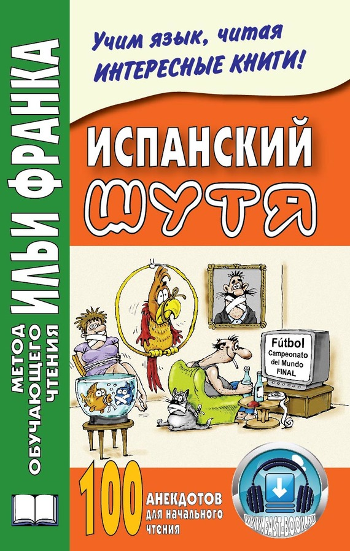

© И. Франк, 2013
© ООО «Восточная книга», 2013
Пособие подготовила Ольга Абелла Кастро.
Издание четвертое, исправленное.
Уважаемые читатели!
Перед вами – НЕ очередное учебное пособие на основе исковерканного (сокращенного, упрощенного и т. п.) авторского текста.
Перед вами прежде всего – ИНТЕРЕСНАЯ КНИГА НА ИНОСТРАННОМ ЯЗЫКЕ, причем настоящем, «живом» языке, в оригинальном, авторском варианте.
От вас вовсе не требуется «сесть за стол и приступить к занятиям». Эту книгу можно читать где угодно, например, в метро или лежа на диване, отдыхая после работы. Потому что уникальность метода как раз и заключается в том, что запоминание иностранных слов и выражений происходит ПОДСПУДНО, ЗА СЧЕТ ИХ ПОВТОРЯЕМОСТИ, БЕЗ СПЕЦИАЛЬНОГО ЗАУЧИВАНИЯ И НЕОБХОДИМОСТИ ИСПОЛЬЗОВАТЬ СЛОВАРЬ.
Существует множество предрассудков на тему изучения иностранных языков. Что их могут учить только люди с определенным складом ума (особенно второй, третий язык и т. д.), что делать это нужно чуть ли не с пеленок и, самое главное, что в целом это сложное и довольно‑таки нудное занятие.
Но ведь это не так! И успешное применение Метода чтения Ильи Франка в течение многих лет доказывает: НАЧАТЬ ЧИТАТЬ ИНТЕРЕСНЫЕ КНИГИ НА ИНОСТРАННОМ ЯЗЫКЕ МОЖЕТ КАЖДЫЙ!
Причем
НА ЛЮБОМ ЯЗЫКЕ,
В ЛЮБОМ ВОЗРАСТЕ,
а также С ЛЮБЫМ УРОВНЕМ ПОДГОТОВКИ (начиная с «нулевого»)!
Сегодня наш Метод обучающего чтения – это почти триста книг на пятидесяти языках мира. И более миллиона читателей, поверивших в свои силы!
Итак, «как это работает»?
Откройте, пожалуйста, любую страницу этой книги. Вы видите, что сначала идет адаптированный текст, с вкрапленным в него дословным русским переводом и небольшим лексико‑грамматическим комментарием. Затем следует тот же текст, но уже неадаптированный, без подсказок.
Если вы только начали осваивать испанский язык, то вам сначала нужно читать текст с подсказками , затем – тот же текст без подсказок . Если при этом вы забыли значение какого‑либо слова, но в целом все понятно, то не обязательно искать это слово в отрывке с подсказками. Оно вам еще встретится. Смысл неадаптированного текста как раз в том, что какое‑то время – пусть короткое – вы «плывете без доски». После того как вы прочитаете неадаптированный текст, нужно читать следующий, адаптированный. И так далее. Возвращаться назад – с целью повторения – НЕ НУЖНО! Просто продолжайте читать ДАЛЬШЕ.
Сначала на вас хлынет поток неизвестных слов и форм. Не бойтесь: вас же никто по ним не экзаменует! По мере чтения (пусть это произойдет хоть в середине или даже в конце книги) все «утрясется», и вы будете, пожалуй, удивляться: «Ну зачем опять дается перевод, зачем опять приводится исходная форма слова, все ведь и так понятно!» Когда наступает такой момент, «когда и так понятно», вы можете поступить наоборот: сначала читать неадаптированную часть , а потом заглядывать в адаптированную . Этот же способ чтения можно рекомендовать и тем, кто осваивает язык не «с нуля».
Язык по своей природе – средство, а не цель, поэтому он лучше всего усваивается не тогда, когда его специально учат, а когда им естественно пользуются – либо в живом общении, либо погрузившись в занимательное чтение. Тогда он учится сам собой, подспудно.
Для запоминания нужны не сонная, механическая зубрежка или вырабатывание каких‑то навыков, а новизна впечатлений. Чем несколько раз повторять слово, лучше повстречать его в разных сочетаниях и в разных смысловых контекстах. Основная масса общеупотребительной лексики при том чтении, которое вам предлагается, запоминается без зубрежки, естественно – за счет повторяемости слов. Поэтому, прочитав текст, не нужно стараться заучить слова из него. «Пока не усвою, не пойду дальше» – этот принцип здесь не подходит. Чем интенсивнее вы будете читать, чем быстрее бежать вперед, тем лучше для вас. В данном случае, как ни странно, чем поверхностнее, чем расслабленнее, тем лучше. И тогда объем материала сделает свое дело, количество перейдет в качество. Таким образом, все, что требуется от вас, – это просто почитывать, думая не об иностранном языке, который по каким‑либо причинам приходится учить, а о содержании книги!
Главная беда всех изучающих долгие годы один какой‑либо язык в том, что они занимаются им понемножку, а не погружаются с головой. Язык – не математика, его надо не учить, к нему надо привыкать. Здесь дело не в логике и не в памяти, а в навыке . Он скорее похож в этом смысле на спорт, которым нужно заниматься в определенном режиме, так как в противном случае не будет результата. Если сразу и много читать, то свободное чтение по‑испански – вопрос трех‑четырех месяцев (начиная «с нуля»). А если учить помаленьку, то это только себя мучить и буксовать на месте. Язык в этом смысле похож на ледяную горку – на нее надо быстро взбежать! Пока не взбежите – будете скатываться. Если вы достигли такого момента, когда свободно читаете, то вы уже не потеряете этот навык и не забудете лексику, даже если возобновите чтение на этом языке лишь через несколько лет. А если не доучили – тогда все выветрится.
А что делать с грамматикой? Собственно, для понимания текста, снабженного такими подсказками, знание грамматики уже не нужно – и так все будет понятно. А затем происходит привыкание к определенным формам – и грамматика усваивается тоже подспудно. Ведь осваивают же язык люди, которые никогда не учили его грамматику, а просто попали в соответствующую языковую среду. Это говорится не к тому, чтобы вы держались подальше от грамматики (грамматика – очень интересная вещь, занимайтесь ею тоже), а к тому, что приступать к чтению данной книги можно и без грамматических познаний.
Эта книга поможет вам преодолеть важный барьер: вы наберете лексику и привыкнете к логике языка, сэкономив много времени и сил. Но, прочитав ее, не нужно останавливаться, продолжайте читать на иностранном языке (теперь уже действительно просто поглядывая в словарь)!
Отзывы и замечания присылайте, пожалуйста, по электронному адресу frank@franklang.ru
La maestra le pregunta a Jaimito (учительница спрашивает у Хаймито):
– Si en un bolsillo tienes 20 (veinte) pesos (если /у тебя/ в кармане есть 20 песо) y en el otro bolsillo 30 (treinta) pesos (а в другом кармане – 30 песо), ¿qué tienes (что у тебя есть)?
– El pantalón de otro (чужие брюки: «брюки другого»).
La maestra le pregunta a Jaimito:
– Si en un bolsillo tenes 20 pesos y en el otro bolsillo 30 pesos, ¿qué tienes?
– El pantalón de otro.
Jaimito en el cole (Хаймито в школе: «в колледже»; colegio, m – колледж ):
– Profe (учитель; profesor, m – учитель; преподаватель ), «mi» no tengo lápiz («мой» не имею карандаш).
– No, Jaimito (нет, Хаймито), no es así, atiende (не так, слушай внимательно; atender – внимательно слушать; быть внимательным ):
Yo no tengo lápiz (у меня нет карандаша: «я не имею карандаш»).
Tú no tienes lápiz (у него нет карандаша: «ты не имеешь карандаша»).
Él no tiene lápiz (у него нет карандаша).
Nosotros no tenemos lápiz (у нас нет карандаша).
Vosotros no tenéis lápiz (у вас нет карандаша).
Ellos no tienen lápiz (у них нет карандаша).
– Bueno (так: «хорошо»), ¿y qué narices (а какого черта: «какие носы»; nariz, f – нос ) ha pasado con los lápices (случилось со всеми карандашами)?
Jaimito en el cole:
– Profe, «mi» no tengo lápiz.
– No, Jaimito, no es así, atiende:
Yo no tengo lápiz.
Tú no tienes lápiz.
Él no tiene lápiz.
Nosotros no tenemos lápiz.
Vosotros no tenéis lápiz.
Ellos no tienen lápiz.
– Bueno, ¿y qué narices ha pasado con los lápices?
Un tío que iba todos los días a un bar (мужчина: «парень», который каждый день: «все дни» ходил в бар; tío, m – дядя; разг. старик; парень ) siempre pedía tres cervezas (всегда просил три /кружки/ пива).
Como el camarero estaba algo extrañado (так как официант был немного удивлен; algo – что‑то; немного; extrañar – изгонять; удивлять ), le pregunta (/он/ спрашивает у него):
– Oye (слушай), ¿por qué siempre que vienes (почему всегда, когда: «что» /ты/ приходишь) pides tres cervezas (просишь три /кружки/ пива) y te las bebes de un tirón (и выпиваешь их залпом: «одним рывком»; tirón, m – рывок; tirar – бросать; дергать )?
– Es que yo tengo dos hermanos (дело в том, что у меня два брата), uno en Suecia (один в Швеции) y otro en París (и = а другой в Париже), y como siempre bebíamos juntos (и так как /мы/ всегда пили вместе), pues yo bebo por ellos (ну вот я /и/ пью за них).
Al otro día el tío llega al bar (на другой день мужчина приходит в бар) y dice (и говорит):
– ¡Dos cervezas (две /кружки/ пива)!
El camarero, extrañado, le pregunta (удивленный официант спрашивает у него):
– ¿Y eso (а: «и» это /почему/), es que se ha muerto un hermano o qué (что, один брат умер или что)?
– ¡No (нет), es que yo he dejado la bebida (дело в том, что я бросил пить; dejar – оставлять; бросать )!
Un tío que iba todos los días a un bar siempre pedía tres cervezas.
Como el camarero estaba algo extrañado, le pregunta:
– Oye, ¿por qué siempre que vienes pides tres cervezas y te las bebes de un tirón?
– Es que yo tengo dos hermanos, uno en Suecia y otro en París, y como siempre bebíamos juntos, pues yo bebo por ellos.
Al otro día el tío llega al bar y dice:
– ¡Dos cervezas!
El camarero, extrañado, le pregunta:
– ¿Y eso, es que se ha muerto un hermano o qué?
– ¡No, es que yo he dejado la bebida!
Un conductor de autobús (водитель автобуса; conducir – вести ) y un sacerdote (и священник) mueren al mismo tiempo (умирают одновременно: «в /одно и/ то же время»).
El conductor fue al cielo (водитель попадает: «пошел» на небо) y el sacerdote al infierno (а священник в ад).
– ¿Por qué (почему)? – preguntó el clérigo a Dios (спросил священник у Бога).
– Porque todo el mundo se dormía (потому что все спали: «весь мир спал») cuando tú predicabas (когда ты проповедовал), mientras que cuando él conducía (тогда как, когда он вел /автобус/) todos rezaban (все молились) – contestó Dios (ответил Бог).
Un conductor de autobús y un sacerdote mueren al mismo tiempo.
El conductor fue al cielo y el sacerdote al infierno.
– ¿Por qué? – preguntó el clérigo a Dios.
– Porque todo el mundo se dormía cuando tú predicabas, mientras que cuando él conducía todos rezaban – contestó Dios.
Resulta que hay unas inundaciones (случается, что есть наводнения = /однажды/ случилось наводнение; resultar – следовать; происходить; inundar – затоплять; наводнять ) y un hombre se queda (и один мужчина остается) en lo alto de un campanario (наверху колокольни; alto – высокий ) totalmente aislado (совершенно один: «изолированный»; aislar – изолировать ).
Pasa toda la mañana (проходит все утро = весь день) y por la tarde llega una barca (и вечером прибывает = приплывает лодка):
– ¡O‑o‑oiga‑a‑a (слу‑у‑ушайте‑е)! suba, que le llevamos (садитесь: «поднимайтесь», /мы/ вас отвезем).
– No, gracias (нет, спасибо), tengo fé en Dios (я верю в Бога: «имею веру в Бога») y seguro que él me salvará (и точно, что он меня спасет = он точно…; seguro – надежный; уверенный; точно ).
– ¿Está seguro (/вы/ уверены)?
– Si‑i‑i (да‑а‑а), sigan, que Dios me salvará (проезжайте: «продолжайте /путь/», потому что меня спасет Бог).
En esto pasa toda la noche (так: «в этом» проходит вся ночь) y al día siguiente (и на следующий день) pasa a su lado una lancha (мимо него проходит = проплывает катер; lado, m – бок; сторона; al lado – рядом; lancha, f – шлюпка; катер ):
– ¡Eh, oiga (эй, слушайте)! Suba, que le llevamos (садитесь: «поднимайтесь», «потому что» /мы/ вас отвезем).
– No (нет), no hace falta (не нужно: «не делает недостатка»). Soy muy devoto (я очень набожный = верующий; devoto – священный; набожный ) y seguro que Dios me salvará (и точно, что Бог меня спасет = и Бог точно…).
Sigue pasando el tiempo (проходит время: «продолжает проходить время») y por la tarde (и вечером) llega un Helicóptero de la Guardia Civil (прибывает вертолет городской охраны):
– ¡Eh‑h‑h‑h (эй)! ¡El del campanario (там, на колокольне: «тот, /что/ на колокольне»)! ¿Necesita ayuda (вам помочь: «/вы/ нуждаетесь в помощи»)?
– No, gracias (нет, спасибо). Confío en Dios (/я/ доверяю Богу = верю в Бога), él me salvará (он меня спасет).
Y esa noche (и в ту ночь) vuelve a subir (снова поднимается; volver – повернуть; volver a – снова /делать что‑либо /) el nivel de las aguas (уровень воды: «вод») y el hombre se ahoga (и мужчина тонет; ahogar – душить; топить ).
Cuando va al cielo (когда /он/ прибывает: «идет» на небо), se encuentra con Dios (встречается с Богом) y le dice (и говорит ему):
– ¡Señor (Сеньор)! ¡Dios mío (Господь мой)! ¿Por qué no me has ayudado (почему /ты/ мне не помог)?
– ¿Qué no te he ayudado (это /я/ тебе не помог: «что /я/ тебе не помог»)? Te mandé una barca (я послал тебе лодку), una lancha (катер), un helicóptero (вертолет)…
Resulta que hay unas inundaciones y un hombre se queda en lo alto de un campanario totalmente aislado.
Pasa toda la mañana y por la tarde llega una barca:
– ¡O‑o‑oiga‑a‑a! suba, que le llevamos.
– No, gracias, tengo fé en Dios y seguro que él me salvará.
– ¿Está seguro?
– Si‑i‑i, sigan, que Dios me salvará.
En esto pasa toda la noche y al día siguiente pasa a su lado una lancha:
– ¡Eh, oiga! Suba, que le llevamos.
– No no hace falta. Soy muy devoto y seguro que Dios me salvará.
Sigue pasando el tiempo y por la tarde llega un Helicóptero de la Guardia Civil:
– ¡Ehhhhh! ¡El del campanario! ¿Necesita ayuda?
– No, gracias. Confío en Dios, él me salvará.
Y esa noche vuelve a subir el nivel de las aguas y el hombre se ahoga.
Cuando va al cielo, se encuentra con Dios y le dice:
– ¡Señor! ¡Dios mío! ¿Por qué no me has ayudado?
– ¿Qué no te he ayudado? Te mandé una barca, una lancha, un helicóptero…
Un día (однажды: «один день»), un ingeniero estaba cruzando una carretera (инженер переходил дорогу; carretera, f – дорога; шоссе; cruzar – пересекать; переходить ) cuando una rana le llamó (когда его позвала лягушка) y le dijo (и сказала ему):
– Si me besas (если /ты/ меня поцелуешь), me convertiré en una hermosa princesa (/я/ превращусь в прекрасную принцессу).
Se agachó (/он/ наклонился), recogió la rana (подобрал лягушку) y se la puso en el bolsillo (и положил ее себе в карман).
La rana habló de nuevo (снова заговорила) y dijo (и сказала):
– Si me besas (если поцелуешь меня) y me conviertes en una hermosa princesa (и превратишь меня в прекрасную принцессу), me quedaré contigo durante una semana (я останусь с тобой на одну неделю: «в течение…»).
El ingeniero sacó la rana de su bolsillo (инженер вынул лягушку из своего кармана), sonrió (улыбнулся) y la devolvió a su lugar (и вернул ее на свое место).
Entonces, la rana gritó (тогда лягушка закричала):
– Si me besas (если поцелуешь меня) y me conviertes en princesa (и превратишь меня в принцессу), me quedaré contigo (я останусь с тобой) y haré lo que quieras (и сделаю то = всё , что /ты/ захочешь; querer ).
Nuevamente (снова; nuevo – новый ), el ingeniero sacó la rana (инженер вынул лягушку), sonrió (улыбнулся) y la volvió a meter en el bolsillo (и снова положил ее в карман; volver – вернуть; volver a – снова /сделать что‑либо /).
Finalmente (в конце концов; final – конец ), la rana preguntó (лягушка спросила):
– Pero bueno (ну ладно: «но хорошо»), ¿qué pasa (что происходит; pasar – проходить; происходить )? Te he dicho (/я/ тебе сказала) que soy una hermosa princesa (что я прекрасная принцесса), que me quedaré contigo una semana (что я останусь с тобой на неделю) y que haré lo que quieras (и что сделаю то, что захочешь). Entonces, ¿por qué no me das un beso (так: «тогда» почему /ты/ меня не целуешь: «не даешь мне поцелуй»)?
– Mira (смотри = слушай), yo soy ingeniero (я инженер). No tengo tiempo para una novia (у меня нет времени на невесту), ¡pero una rana que habla (но лягушка, которая говорит = говорящая лягушка) mola un mogollón (очень прикольно; molar – разг. нравиться; mogollón, m – лентяй; разг. очень )!
Un día, un ingeniero estaba cruzando una carretera cuando una rana le llamó y le dijo:
– Si me besas, me convertiré en una hermosa princesa.
Se agachó, recogió la rana y se la puso en el bolsillo.
La rana habló de nuevo y dijo:
– Si me besas y me conviertes en una hermosa princesa, me quedaré contigo durante una semana.
El ingeniero sacó la rana de su bolsillo, sonrió y la devolvió a su lugar.
Entonces, la rana gritó:
– Si me besas y me conviertes en princesa, me quedaré contigo y haré lo que quieras.
Nuevamente, el ingeniero sacó la rana, sonrió y la volvió a meter en el bolsillo.
Finalmente, la rana preguntó:
– Pero bueno, ¿qué pasa? Te he dicho que soy una hermosa princesa, que me quedaré contigo una semana y que haré lo que quieras. Entonces, ¿por qué no me das un beso?
– Mira, yo soy ingeniero. No tengo tiempo para una novia, ¡pero una rana que habla mola un mogollón!
A las cuatro de la madrugada (в четыре часа утра; madrugada, f – раннее утро; время после полуночи ) suena el teléfono (звонит: «звучит» телефон). Luis Miguel descuelga el aparato (Луис Мигель снимает трубку: «аппарат»; colgar – вешать ), absolutamente dormido (совершенно сонный). Del teléfono sale una voz ronca (из телефона доносится: «выходит» хриплый голос) que se entiende con dificultad (который понимается с трудом).
– Hola (привет)… ya (/я/ уже)… sé (умею: «знаю»)… hablar (говорить)…
– ¡Joder (черт возьми)! Yo también sé hablar (я тоже умею говорить) y no me dedico a molestar a los demás (и не занимаюсь /тем, что/ досаждаю другим; dedicarse – заниматься; посвящать себя; molestar – надоедать; досаждать ) a estas horas (в такое время: «в эти часы»)…
– Pero (но)… yo (я)… soy…una…vaca (корова)…
A las cuatro de la madrugada suena el teléfono. Luis Miguel descuelga el aparato, absolutamente dormido. Del teléfono sale una voz ronca que se entiende con dificultad.
– Hola… ya… sé… hablar…
– ¡Joder! Yo también sé hablar y no me dedico a molestar a los demás a estas horas…
– Pero… yo… soy…una…vaca…
El guardia le dice al conductor borracho (полицейский говорит пьяному водителю; guardia, f – охрана; guardia, m – полицейский; conducir – вести; водить /машину /):
– ¿Me da su permiso de conducir (дадите мне: «можете дать мне» ваши права: «разрешение на вождение»)?
– Sí, conduzca (да, водите), conduzca (водите)…
El guardia le dice al conductor borracho:
– ¿Me da su permiso de conducir?
– Sí, conduzca, conduzca…
Un hombre se encuentra acostado en un teatro (мужчина лежит: «находится лежа» в театре; encontrar – найти ; encontrarse – встретиться; находиться; acostar – уложить ) ocupando varias butacas (занимая несколько кресел) con sus piernas y brazos («со» своими ногами и руками). Al observar su actitud (заметив его поведение; observar – наблюдать; замечать; actitud, f – поза; поведение ), el acomodador le pregunta con ironía (капельдинер спрашивает его с иронией):
– ¿Está cómodo (/вам/ удобно)? ¿Quiere que le traiga un cafecito (хотите = не хотите ли , чтобы /я/ вам принес /чашечку/ кофе; café, m – кофе )?
– No, tío (нет, старик; tío, m – дядя; разг. парень ), llama a una ambulancia (вызови: «позови» скорую помощь), que me caí del palco (потому что я выпал из ложи = упал с балкона).
Un hombre se encuentra acostado en un teatro ocupando varias butacas con sus piernas y brazos. Al observar su actitud, el acomodador le pregunta con ironía:
– ¿Está cómodo? ¿Quiere que le traiga un cafecito?
– No, tío, llama a una ambulancia, que me caí del palco.
Llaman a un hombre a su casa (одному мужчине звонят домой: «в его дом») diciéndole que su mujer (говоря = и говорят ему, что его жена) se ha caído al río (упала в реку).
El hombre, con cara de angustia (мужчина, в тревоге: «с тревожным лицом»; angustia, f – тревога ), sale corriendo a toda velocidad (со всех ног бежит: «выходит бегом на всей скорости»; correr – бежать ) hacia el embarcadero (к причалу; embarcar – погрузить /на поезд, на пароход /; barco, m – судно; корабль ).
Coge un bote (берет лодку = садится в лодку) y empieza a remar río arriba (и начинает грести вверх по реке = против течения).
– Pero oiga (но послушайте)… ¿Qué hace (что /вы/ делаете)? Si su mujer se ha caído al río (если ваша жена упала в реку) estará más abajo (она /должна/ быть ниже /по течению/)…
– ¡¡Usted no conoce a mi mujer (вы не знаете мою жену)!! ¡¡¡Siempre le lleva la contraria a todo (она всегда все делает наперекор: «всему перечит»)!!!
Llaman a un hombre a su casa diciéndole que su mujer se ha caído al río.
El hombre, con cara de angustia, sale corriendo a toda velocidad hacia el embarcadero.
Coge un bote y empieza a remar río arriba.
– Pero oiga… ¿Qué hace? Si su mujer se ha caído al río estará más abajo…
– ¡¡Usted no conoce a mi mujer!! ¡¡¡Siempre le lleva la contraria a todo!!!
En la zapatería (в обувном магазине; zapato, m – ботинок ).
– ¿Tienen zapatos del 36 (у вас есть ботинки тридцать шестого)?
– No, lo siento (нет, /мне очень/ жаль: «сожалею»; sentir – чувствовать; сожалеть ), de la guerra (с войны = /времен/ войны) ya no nos queda nada (у нас уже ничего не осталось).
En la zapatería.
– ¿Tienen zapatos del 36?
– No, lo siento, de la guerra ya no nos queda nada.
Llega un borracho a su casa (приходит пьяница к себе домой) a altas horas de la madrugada (ранним утром; alto – высокий; hora, f – час ) y la mujer le pregunta (и жена спрашивает у него):
– ¿Qué horas son éstas de venir (что это за время: «за часы», чтобы приходить)?
– La una (час) – le responde el marido (отвечает ей муж).
– ¿Tú estás seguro de que es la una (ты уверен в том, что /сейчас/ час)?
– ¡Cómo no voy a estarlo (как /я/ не буду /уверен/) si el reloj de la iglesia (если церковные часы) lo ha repetido seis veces (повторили это шесть раз)!
Llega un borracho a su casa a altas horas de la madrugada y la mujer le pregunta:
– ¿Qué horas son éstas de venir?
– La una – le responde el marido.
– ¿Tú estás seguro de que es la una?
– ¡Cómo no voy a estarlo si el reloj de la iglesia lo ha repetido seis veces!
¿Qué hace un catalán 1 si tiene frío (что делает каталонец, если ему холодно: «имеет холод»)?
– Se pone al lado de la estufa (становится/располагается рядом с обогревателем; estufa, f – печь; обогреватель ).
– ¿Y si tiene mucho frío (а если ему очень холодно: «имеет много холода»)?
– La enciende (включает его; encender – зажечь; включить ).
¿Qué hace un catalán si tiene frío?
– Se pone al lado de la estufa.
¿Y si tiene mucho frío?
– La enciende.
– Mamá (мама), hoy en el colegio (сегодня в школе: «в колледже») hemos aprendido a hacer explosivos (/мы/ научились делать взрывчатые /вещества/; explotar – использовать; взорваться ).
– Muy bien, Miguel (очень хорошо, Мигель). ¿Y mañana qué aprenderéis en el colegio (а завтра чему вы будете учиться: «научитесь» в школе)?
– ¿Qué colegio (в какой школе)?
– Mamá, hoy en el colegio hemos aprendido a hacer explosivos.
– Muy bien, Miguel. ¿Y mañana qué aprenderéis en el colegio?
– ¿Qué colegio?
– Entrenador (тренер; entrenar – тренировать ), ¿qué le parece mi hijo (как вам «кажется» мой сын = что вы думаете о моем сыне)?
– Es un jugador muy prometedor (/он/ очень /много/обещающий игрок).
– Ah (а), ¿es bueno (он хороший = хорошо играет)?
– No (нет), hace cinco años (вот уже: «делает» пять лет) que me viene prometiendo (как /он/ обещает: «приходит, обещая») jugar mejor (играть лучше).
– Entrenador, ¿qué le parece mi hijo?
– Es un jugador muy prometedor.
– Ah, ¿es bueno?
– No, hace cinco años que me viene prometiendo jugar mejor.
Tres curas (три священника), uno inglés (один англичанин), uno francés (один француз) y otro catalán (а другой каталонец), están discutiendo la manera (обсуждают способ; discutir – спорить; обсуждать ) de repartir las limosnas (делить милостыню):
INGLÉS (англичанин): Nosotros tenemos un método (у нас есть метод) que nos va muy bien (который нам очень подходит: «нам идет очень хорошо»): trazamos un círculo en el suelo (/мы/ чертим круг на земле; trazar – провести; начертить ), tiramos las monedas al aire (подбрасываем в воздух монеты), las que caen dentro (те, которые падают внутрь), se las ofrecemos a Dios (мы «их» преподносим Господу; ofrecer – предлагать; подносить ), y las otras (а другие = остальные ) para la parroquia (приходу).
FRANCÉS (француз): ¡Ah (а)! El nuestro (наш /способ/) es mejor (лучше): trazamos una línea recta en el suelo (/мы/ чертим прямую линию на земле) y tiramos las monedas (и подбрасываем монеты), las que caen a la derecha (те, которые падают справа) se las ofrecemos a Dios (мы преподносим Господу), y las otras (а другие = остальные ), para la parroquia (приходу).
CATALÁN (каталонец): El nuestro es el mejor (наш /способ/ лучше): tiramos las monedas al aire (/мы/ подбрасываем монеты в воздух). ¡Las que coge Dios son para él (те, которые Господь берет/забирает – /те/ ему)! ¡Y las otras, para la parroquia (а остальные – приходу)!
Tres curas, uno inglés, uno francés y otro catalán, están discutiendo la manera de repartir las limosnas:
INGLÉS: Nosotros tenemos un método que nos va muy bien, trazamos un círculo en el suelo, tiramos las monedas al aire, las que caen dentro, se las ofrecemos a Dios, y las otras, para la parroquia.
FRANCÉS: ¡Ah! El nuestro es mejor, trazamos una línea recta en el suelo y tiramos las monedas, las que caen a la derecha se las ofrecemos a Dios, y las otras, para la parroquia.
CATALÁN: El nuestro es el major: tiramos las monedas al aire. ¡Las que coge Dios son para él! ¡Y las otras, para la parroquia!
El secretario de Hacienda (секретарь министерства финансов; hacienda, f – имение; казна; министерство финансов ) habla con el presidente (разговаривает с президентом):
– Tengo que darle dos noticias (/я/ должен дать вам две новости = у меня для вас две новости), presidente (президент). Una buena y una mala (одна хорошая и одна плохая).
– Dígame la buena, por favor (скажите мне хорошую, пожалуйста).
– Acabamos de pagar la deuda externa (мы только что выплатили внешний долг; acabar – заканчивать; acabar de – только что /сделать что‑либо /; deber – быть должным ). No le debemos nada a nadie (/мы/ никому ничего не должны).
– ¿Y la mala (а плохая /новость/)?
– Tenemos que desalojar el país en 24 horas (/мы/ должны освободить страну в течение двадцати четырех часов; desalojar – выгнать; освободить; alojar – поместить ).
El secretario de Hacienda habla con el presidente:
– Tengo que darle dos noticias, presidente. Una buena y una mala.
– Dígame la buena, por favor.
– Acabamos de pagar la deuda externa. No le debemos nada a nadie.
– ¿Y la mala?
– Tenemos que desalojar el país en 24 horas.
Lorena se encuentra con su amigo Jaime (Лорена встречает своего друга Хайме) y le dice (и говорит ему):
– ¡Hola, Jaime (привет, Хайме)! Hace mucho (давно: «делает много») que no te veía (что = как /я/ тебя не видела). ¿Qué has hecho (что /ты/ делал)?
– Pues nada (ну, ничего), abandoné mi carrera de programador (бросил свою карьеру программиста; abandonar – отпускать; бросать; оставлять; carrera, f – пробежка; карьера; correr – бегать; programa, m – программа ) para dedicarme a escribir (чтобы посвятить себя /тому, чтобы/ писать). Ahora soy escritor (теперь /я/ писатель).
– ¡Qué bien (как хорошо)! Admiro la gente (/я/ восхищаюсь людьми) que abandona su carrera (которые бросают свою карьеру) para dedicarse (чтобы посвятить себя) a lo que siempre soñó (тому, о чем всегда мечтали). ¿Has vendido algo (/ты уже/ что‑нибудь продал)?
– ¡Sí (да)! Mi casa (мой дом), mi coche (мою машину), mis acciones en la bolsa (мои акции на бирже; bolsa, f – сумка; биржа ), ¡Casi todo (почти все)!
Lorena se encuentra con su amigo Jaime y le dice:
– ¡Hola Jaime! Hace mucho que no te veía. ¿Qué has hecho?
– Pues nada, abandoné mi carrera de programador para dedicarme a escribir. Ahora soy escritor.
– ¡Qué bien! Admiro la gente que abandona su carrera para dedicarse a lo que siempre soñó. ¿Has vendido algo?
– ¡Sí! Mi casa, mi coche, mis acciones en la bolsa, ¡Casi todo!
– ¡Qué alegría, Constantino (какая радость, Константино), me han tocado cien millones de pesetas en la lotería (я выиграл: «мне достались» сто миллионов песет в лотерею; tocar – трогать; доставаться )!
– ¡Qué bien (как хорошо)! Felicidades, Joaquín (поздравляю: «поздравления», Хоакин; felicidad, f – счастье; поздравления ). Y ¿qué harás con tanto dinero (и что /ты/ будешь делать с таким /количеством/ денег)?
– Pagar las deudas (платить долги; deber – быть должным ).
– ¿Y el resto (а остальные: «остальное»)?
– Que esperen (пусть подождут).
– ¡Qué alegría, Constantino, me han tocado cien millones de pesetas en la lotería!
– ¡Qué bien! Felicidades, Joaquín. Y ¿qué harás con tanto dinero?
– Pagar las deudas.
– ¿Y el resto?
– Que esperen.
Dos marujas presumen (две домохозяйки хвастаются; presumir – полагать; хвастаться ) de las cualidades de sus hijas (способностями: «качествами» своих дочерей).
– Mira, si es inteligente mi Vanessa (смотри, какая моя Ванесса умная: «умная ли моя Ванесса»), que se lee el listín de teléfonos (что читает телефонный список; lista, f – полоса; список ) y se lo aprende (и запоминает: «выучивает его»).
– ¿De memoria (наизусть: «на память»)?
– No, de memoria no (нет, не на память). ¡Entendiéndolo (понимая его)!
Dos marujas presumen de las cualidades de sus hijas.
– Mira, si es inteligente mi Vanessa, que se lee el listín de teléfonos y se lo aprende.
– ¿De memoria?
– No, de memoria no. ¡Entendiéndolo!
Llega el marido a casa (приходит муж домой) y le dice a su mujer (и говорит своей жене):
– ¡Hola, Maruja (привет, Маруха), a que no sabes (/спорим/, что ты не знаешь) qué me han regalado (что мне подарили)!
– Pues no, Pepe (ну, нет Пепе), no me lo imagino (не представляю себе этого = даже не догадываюсь).
El hombre abre un fardo (мужчина открывает мешок), saca un lechoncillo (достает молочного поросенка; lechón, m – молочный поросенок; leche, f – молоко ) y se lo enseña (и показывает ей его).
– ¡Mira (смотри)! Me he encontrado con mi tío (я встретил своего дядю: «встретился со своим дядей») que venía del pueblo (который шел из поселка) y me ha dado un lechón (и /он/ дал мне поросенка).
– ¡Pero, Pepe (но Пепе)! ¿Para qué queremos nosotros un cerdo (зачем нам свинья: «мы хотим свинью»; cerdo, m – свинья; кабан )?
– Calla, Maruja (молчи, Маруха), que dentro de cuatro meses (/потому/ что через четыре месяца: «внутри четырех месяцев») llegan las Navidades (наступят: «придут» рождественские праздники; Navidad, m – Рождество; pl. – рождественские праздники ), lo alimentamos hasta entonces (до тех пор /мы/ его откормим; entonces – тогда; то время; alimento, m – питание ) y así solucionamos la cena de Navidad (и так разрешим рождественский ужин = решим проблему рождественского ужина).
– ¡Tú estás loco (ты с ума сошел: «сумасшедший»)! ¿Dónde piensas (где = куда , /ты/ думаешь) que lo vamos a meter (что /мы/ его денем/засунем)?
– Pues (ну)… ¡Debajo de nuestra cama (под нашу кровать)!
– ¡Pero bueno (ну знаешь: «но хорошо»)! Esto es lo último (это последнее) que me faltaba ya por oír (чего мне уже = еще не хватало услышать = этого еще не хватало). Y (а: «и»)… ¿Qué pasa con el olor (что происходит с запахом = а как же запах)?
A lo cual el hombre contesta (на что мужчина отвечает):
– El olor (запах)… el olor… ¡¡¡Que se aguante (пусть потерпит; aguantar – держать; aguantarse – сдерживаться; терпеть )!!!
Llega el marido a casa y le dice a su mujer:
– ¡Hola, Maruja, a que no sabes qué me han regalado!
– Pues no, Pepe, no me lo imagino.
El hombre abre un fardo, saca un lechoncillo y se lo enseña.
– ¡Mira! Me he encontrado con mi tío que venía del pueblo y me ha dado un lechón.
– ¡Pero, Pepe! ¿Para qué queremos nosotros un cerdo?
– Calla, Maruja, que dentro de cuatro meses llegan las Navidades, lo alimentamos hasta entonces y así solucionamos la cena de Navidad.
– ¡Tú estás loco! ¿Dónde piensas que lo vamos a meter?
– Pues… ¡Debajo de nuestra cama!
– ¡Pero bueno! Esto es lo último que me faltaba ya por oír. Y… ¿Qué pasa con el olor?
A lo cual el hombre contesta:
– El olor… el olor… ¡¡¡Que se aguante!!!
Un hombre va a un restaurante (мужчина идет в ресторан).
Cuando vienen a tomarle nota (когда приходят = подходят , чтобы записать его заказ: «взять у него записи») coge el menú y empieza (/он/ берет меню и начинает):
– De primero, una sopa aguada y fría (на первое жидкий: «водянистый» и холодный суп; agua, f – вода ), a ser posible, (/если/ возможно = желательно) con un par de pelos (с парой волос)…
De segundo, un filete de cerdo (на второе кусок свинины; filete, m – вырезка; ломтик /мяса /) escondido debajo de una patata frita (спрятанный под одним /ломтиком/ жареной картошки) y más duro que una piedra (и жесткий как: «более твердый, чем» камень)…
De postre arroz rancio (на десерт протухший рис; rancio – несвежий; затхлый ) con leche fría (с холодным молоком) y soso (и пресный/несоленый).
Un poco de pan de ayer (немного вчерашнего хлеба; ayer – вчера ) y vino de garrafón (и вино из фляги; garrafón, m – кувшин; фляга; разг. /об алкоголе / – плохого качества ).
– Pero, señor (но, сеньор) nosotros no servimos esas cosas (мы это: «эти вещи» не подаем).
– ¿Qué no (разве: «что нет»)? ¿Y lo que me pusisteis ayer qué (а то, что /вы/ мне вчера подали: «поставили», что /это было/)?
Un hombre va a un restaurante.
Cuando vienen a tomarle nota coge el menú y empieza:
– De primero, una sopa aguada y fría a ser posible con un par de pelos…
De Segundo, un filete de cerdo escondido debajo de una patata frita y más duro que una piedra…
De postre arroz rancio con leche fría y soso.
Un poco de pan de ayer y vino de garrafón.
– Pero, señor, nosotros no servimos esas cosas.
– ¿Qué no? ¿Y lo que me pusisteis ayer qué?
Un físico (физик), un ingeniero (инженер) y un matemático (и математик) van en un tren (едут в поезде) por Escocia (по Шотландии).
Al observar por la ventana (смотря: «наблюдая» в окно), ven una oveja negra (видят черную овцу).
«Aja (ага)» – dice el físico (говорит физик) – «veo que (/я/ вижу, что) las ovejas escocesas son negras (шотландские овцы черные).»
«Hmm (хм)…» – dice el ingeniero (говорит инженер) – «querrás decir (/ты/, /наверное/, хочешь сказать) que algunas ovejas escocesas (что некоторые шотландские овцы) son negras (черные).»
«No (нет)» – dice el matemático (говорит математик) – «todo lo que sabemos (все = единственное , что мы знаем) es que existe al menos (что существует как минимум = по крайней мере) una oveja en Escocia (одна овца в Шотландии), y que por lo menos (и что по крайней мере) uno de sus lados es negro (один из ее боков черный = с одной стороны она черная)».
Un físico, un ingeniero y un matemático van en un tren por Escocia.
Al observar por la ventana ven una oveja negra.
«Aja» – dice el físico – «veo que las ovejas escocesas son negras.»
«Hmm…» – dice el ingeniero – «querrás decir que algunas ovejas escocesas son negras.»
«No» – dice el matemático – «todo lo que sabemos es que existe al menos una oveja en Escocia, y que por lo menos uno de sus lados es negro.»
Un catalán se encuentra con un amigo (каталонец встречается с другом):
– Pero, tio (но = слушай, старик; tio, m – дядя; разг. парень ), ¿dónde está tu anillo de matrimonio (где твое обручальное кольцо; matrimonio, m – брак )?
– Es que esta semana (дело в том, что на этой неделе) lo lleva mi esposa (его носит моя жена).
Un catalán se encuentra con un amigo:
– Pero tio, ¿dónde está tu anillo de matrimonio?
– Es que esta semana lo lleva mi esposa.
Un conductor, al salir del bar (водитель, выйдя из бара), entra en su automóvil (садится: «заходит» в свой автомобиль). Alarmado por el robo (обеспокоенный кражей; alarmar – вызывать беспокойство ) que acaba de descubrir (которую /он/ только что обнаружил; acabar – заканчивать; acabar de – только что /сделать что‑то /), llama a un guardia urbano (/он/ зовет «городского» полицейского; guardia, f – охрана; guardia, m – полицейский ) y le dice (и говорит ему):
– Mire (слушайте: «смотрите»), agente (агент/полицейский). Me han robado el radiocassette (у меня украли радиомагнитофон), y el volante (и руль), y la palanca del cambio de marchas (и рычаг переключения скоростей: «смены передач»; cambiar – менять; marchar – направляться; marcha, f – ходьба; скорость; передача )…
El guardia, impasible (полицейский невозмутимо: «невозмутимый»; paz, f – мир; спокойствие ), le responde (отвечает ему):
– ¿Quiere hacer el favor (не могли бы /вы/: «хотите сделать одолжение»; favor, m – помощь; одолжение ) de sentarse en el asiento de delante (сесть на переднее сидение; delante – впереди ) y no en el de atrás (а не на заднее; atrás – сзади )?
Un conductor, al salir del bar, entra en su automóvil. Alarmado por el robo que acaba de descubrir, llama a un guardia urbano y le dice:
– Mire, agente. Me han robado el radiocassette, y el volante, y la palanca del cambio de marchas…
El guardia, impasible, le responde:
– ¿Quiere hacer el favor de sentarse en el asiento de delante y no en el de atrás?
Un gitanito va con su padre (цыганенок идет со своим отцом; gitano, m – цыган ) y le pregunta (и спрашивает у него):
– Papá (папа), ¿qué está más lejos (что дальше), la Luna o Huesca (луна или Уэска)?
Y el padre le contesta (и отец ему отвечает):
– Pero (но), vamos a ver (слушай: «давай посмотрим»), gilipollas (разг. дурак/дуралей): ¿tú ves Huesca desde aquí (ты видишь отсюда Уэску)?
Un gitanito va con su padre y le pregunta:
– Papá, ¿qué está más lejos, la Luna o Huesca?
Y el padre le contesta:
– Pero, vamos a ver, gilipollas: ¿tú ves Huesca desde aquí?
Un padre da consejos a su hijo (отец дает советы = наставления своему сыну) que marcha a estudiar a otra ciudad (который уезжает учиться в другой город):
– Y ya sabes, Jose (и /ты/ уже знаешь = знаешь, Хосе), que cuando estés por ahí fuera (что когда ты будешь там: «где‑то там» за пределами: «вне» /Бильбао/), tienes que tener buena educación (/ты/ должен иметь хорошее воспитание = быть воспитанным; tener – иметь; tener que – быть должным ) y no preguntar a nadie (и никого не спрашивать) de dónde es (откуда /он/).
– Y ¿por qué (а почему) no le tengo que preguntar a nadie (я не должен никого спрашивать; tener – иметь; tener que – быть должным ) de dónde es (откуда /он/)?
– Pues porque (ну, потому что) si es de Bilbao (если /он/ из Бильбао) ya te lo dirá él (он уж /сам/ тебе это = об этом скажет) y si no (и = а если нет), no le tienes que hacer (/ты/ не должен заставлять: «делать» его) pasar vergüenza (стыдиться: «испытывать стыд»; pasar – проходить; испытывать; avergonzar – смутить; пристыдить ).
Un padre da consejos a su hijo que marcha a estudiar a otra ciudad:
– Y ya sabes, Jose, que cuando estés por ahí fuera, tienes que tener buena educación y no preguntar a nadie de dónde es.
– Y ¿por qué no le tengo que preguntar a nadie de dónde es?
– Pues porque si es de Bilbao ya te lo dirá él y si no, no le tienes que hacer pasar vergüenza.
– Mi médico me ha prohibido (мой врач запретил мне) que juegue al fútbol (играть: «чтобы я играл» в футбол).
– ¿Y eso (и это = почему это)? ¿Qué enfermedad tienes (чем /ты/ болеешь: «какую болезнь /ты/ имеешь»; enfermarse – заболевать )?
– Nada (ничем), simplemente me vió jugando (/он/ просто увидел, как я играю: «меня играющим»).
– Mi médico me ha prohibido que juegue al fútbol.
– ¿Y eso? ¿Qué enfermedad tienes?
– Nada, simplemente me vió jugando.
El reo (осужденный/преступник), momentos antes (за /несколько/ моментов = минут до того) de aplicarle la pena de muerte (как к нему /должны/ применить смертную казнь: «смертное наказание»; aplicar – приложить; применить; pena, f – печаль; наказание ), oye la fatídica frase (слышит зловещую/роковую фразу).
– ¿Cuál es su último deseo (каково ваше последнее желание)?
– No estar presente en la ejecución (не присутствовать на казни; ejecución, f – исполнение; казнь; ejecutar – исполнить; казнить ).
– No diga tonterías (не говорите глупостей; tonto, m – дурак; decir ). Esto no es posible (это невозможно). Pida otro deseo (просите другое желание).
– Está bien (хорошо). Pues quiero aprender japonés (ну /тогда/ /я/ хочу выучить японский).
El reo, momentos antes de aplicarle la pena de muerte, oye la fatídica frase.
– ¿Cuál es su último deseo?
– No estar presente en la ejecución.
– No diga tonterías. Esto no es posible. Pida otro deseo.
– Está bien. Pues quiero aprender japonés.
Están dos amigas hablando (две подруги разговаривают) y la más fea (и самая некрасивая) (que era realmente fea (которая была на самом деле некрасивая; real – настоящий )) le dice a la otra (говорит другой):
– ¡Pues a mí me encanta la Naturaleza (так вот, я обожаю природу; pues – ну, так вот )!
– ¿A pesar de lo que te ha hecho (несмотря на то, что /она/ тебе = с тобой сделала)?
Están dos amigas hablando y la más fea (que era realmente fea) le dice a la otra:
– ¡Pues a mí me encanta la Naturaleza!
– ¿A pesar de lo que te ha hecho?
– He ido al médico (/я/ ходил в врачу) y me ha quitado el whisky (и /он/ запретил мне: «отнял у меня» виски; quitar – убирать; отнимать; запрещать ), el tabaco (табак) y las drogas (и наркотики).
– Pero bueno (да ладно: «но хорошо»), ¿tú vienes (ты приходишь = ты идешь) del médico o de la aduana (от врача или с таможни)?
– He ido al médico y me ha quitado el whisky, el tabaco y las drogas.
– Pero bueno, ¿tú vienes del médico o de la aduana?
El alcalde de Lepe (мэр /города/ Лепе4) le pide al secretario (просит секретаря):
– Dentro de dos semanas (через две недели; dentro – внутри; через ), para la feria del pueblo (для городского праздника), quiero que toque (/я/ хочу, чтобы играла; tocar – трогать; играть /о музыке /) una banda de música (музыкальная группа). Pero una banda en condiciones (но хорошая группа; condición, f – условие ).
A las dos semanas (через две недели) estaba tocando la banda (играла группа) con unos trajes muy elegantes (в очень элегантных костюмах: «с очень элегантными костюмами»). El secretario le pregunta al alcalde (секретарь спрашивает мэра) que si todo estaba a su gusto (все ли ему нравилось: «было ему по вкусу»; gustar – нравиться ).
– Todo está muy bien (все очень хорошо), pero a ése de la varita (но этого с палочкой; vara, f – прут; палка ) me lo quitas (убери его: «/ты/ мне его уберешь»), que lo único que hace (потому что единственное, что он делает) es distraerme al personal (/так/ это отвлекает мне персонал).
El alcalde de Lepe le pide al secretario:
– Dentro de dos semanas, para la feria del pueblo, quiero que toque una banda de música. Pero una banda en condiciones.
A las dos semanas estaba tocando la banda con unos trajes muy elegantes. El secretario le pregunta al alcalde que si todo estaba a su gusto.
– Todo está muy bien, pero a ése de la varita me lo quitas, que lo único que hace es distraerme al personal.
– Papá (папа), papá hay un señor en la puerta (у двери стоит: «есть» сеньор) haciendo una colecta (/который/ собирает /пожертвования/: «делая сбор»; colectar/ recolectar – собирать /деньги, пожертвования /) para una nueva piscina (на новый бассейн).
– Dale un vaso de agua (дай ему стакан воды).
– Papá, papá hay un señor en la puerta haciendo una colecta para una nueva piscina.
– Dale un vaso de agua.
Un niño le pregunta a su padre (ребенок спрашивает своего отца):
– Papá (папа), papá, ¿puedo comer este pastel (можно, /я/ съем это пирожное: «/я/ могу съесть…»)?
– No, hijo (нет, сынок: «сын»), que vas a reventar (потому что /ты/ лопнешь/взорвешься).
– Pues dámelo (ну так дай мне его) y apártate (и отойди; apartar – отделить; отвести /в сторону /; apartarse – отдалиться ).
Un niño le pregunta a su padre:
– Papá, papá, ¿puedo comer este pastel?
– No, hijo, que vas a reventar.
– Pues dámelo y apártate.
– Papá (папа), en el colegio me llaman mafioso (в школе: «в колледже» меня называют мафиозо; mafia, f – мафия ).
– No te preocupes (не беспокойся), ya iré (/вот/ уж /я/ пойду) a hablar con el director (поговорить с директором).
– Bueno (хорошо), pero que parezca un accidente (но пусть /это/ будет похоже на несчастный случай).
– Papá, en el colegio me llaman mafioso.
– No te preocupes, ya iré a hablar con el director.
– Bueno, pero que parezca un accidente.
Dos niños se sientan a la mesa (два ребенка садятся за стол) para cenar (чтобы ужинать) y uno le pregunta al otro (и один спрашивает другого):
– Oye (слушай), ¿tú rezas antes de comer (ты молишься перед едой: «перед /тем, как/ есть»)?
– No (нет), mi mamá cocina bien (моя мама хорошо готовит).
Dos niños se sientan a la mesa para cenar y uno le pregunta al otro:
– Oye, ¿tú rezas antes de comer?
– No, mi mamá cocina bien.
El guardia para un vehículo (полицейский останавливает машину) que se había saltado un semáforo (которая проехала: «проскочила» светофор).
– ¿Por qué se lo ha pasado en rojo (почему /вы/ проехали «его» на красный /свет/)?
– Perdone (извините), pero es que soy daltónico (но дело в том, что я дальтоник).
– ¿Qué pasa (и что: «что происходит»; pasar – проходить; происходить )? ¿Que en Daltonia no hay semáforos (что, в Дальтонии нет светофоров)?
El guardia para un vehículo que se había saltado un semáforo.
– ¿Por qué se lo ha pasado en rojo?
– Perdone, pero es que soy daltónico.
– ¿Qué pasa? ¿Que en Daltonia no hay semáforos?
La mamá de Jaimito le dice (мама Хаймито говорит ему):
– ¡Jaimito (Хаймито), aléjate de la jaula del león (отойди от клетки со львом: «льва»; alejar – убрать; отодвинуть; alejarse – отдалиться; lejano – далекий )!
– No te preocupes, mamá (не волнуйся, мама). No le voy a hacer nada (/я/ ему ничего не сделаю).
La mamá de Jaimito le dice:
– ¡Jaimito, aléjate de la jaula del león!
– No te preocupes, mamá. No le voy a hacer nada.
Un viajero está en el mostrador de una aerolínea (путешественник /находится/ у стойки авиалинии; mostrador, m – указатель; прилавок; mostrar – показывать ) documentando su equipaje (регистрируя свой багаж; documentar – документировать; documento, m – документ ):
– Quiero que la valija grande (/я/ хочу, чтобы большой чемодан; valija, f – мешок; чемодан ) la envíen a Londres (отправили в Лондон). La pequeña a Miami (маленький – в Майами).
Los dos bolsos envíelos a Río de Janeiro (обе сумки отправьте в Рио‑де‑Жанейро) y el baúl a Beirut (а баул в Бейрут).
– Discúlpeme (извините меня), pero eso no es posible (но это невозможно), señor (сеньор).
– ¿Cómo que no (как это нет: «как что нет»)? ¿Y que hicisteis la última vez (и = а что /вы/ сделали в последний = в прошлый раз) que facturé? ¡¡¡Cabrones (что = когда /я/ сдал /багаж/, козлы; facturar – отправить; сдать /багаж /)!!!
Un viajero está en el mostrador de una aerolínea documentando su equipaje:
– Quiero que la valija grande la envíen a Londres. La pequeña a Miami.
Los dos bolsos envíelos a Río de Janeiro y el baúl a Beirut.
– Discúlpeme, pero eso no es posible, señor.
– ¿Cómo que no? ¿Y que hicisteis la última vez que facture? ¡¡¡Cabrones!!!
Dos en un coche (двое в машине):
– No corras tanto (не надо ехать: «не беги» так /быстро/). ¡En cada curva (на каждом повороте; curva, f – кривая; поворот; curvar – искривить ) cierro los ojos (/я/ закрываю глаза)!
– ¡Ah (а)! ¿Tú también (ты тоже)?
Dos en un coche:
– No corras tanto. ¡En cada curva cierro los ojos!
– ¡Ah! ¿Tú también?
– Y (/ну/ и), ¿desde cuándo (с каких пор; cuándo – когда ) estás trabajando en esta oficina (ты работаешь в этом офисе)?
– Desde que me amenazaron (с тех пор, как мне пригрозили) con echarme (выгнать меня; echar – бросить; выгнать ) si seguía haciendo el vago (если я продолжу быть бездельником; vago, m – бродяга; лентяй; vagar – бродить /без цели /).
– Y, ¿desde cuándo estás trabajando en esta oficina?
– Desde que me amenazaron con echarme si seguía haciendo el vago.
San Pedro atiende a un cantante español famoso (Святой Петр принимает знаменитого испанского певца; atender – внимательно /смотреть, слушать /; принимать; fama, f – слава ) que acaba de fallecer (который недавно: «только что» скончался; acabar – заканчивать; acabar de – только что /сделать что‑либо /). Se dispone a rellenar la ficha (/он/ готовится заполнить карточку; llenar /rellenar – наполнить; заполнить; lleno – полный ) de entrada en el paraíso (входа в рай).
– ¿Nombre (имя)?
– Julio Iglesias (Хулио Иглесиас).
– ¿Estado civil (семейное положение: «гражданское состояние»)?
– Bueno (ну: «хорошо»), he estado casado con Isabel Preysler (я был женат на Изабель Прейслер), pero he tenido como amantes (но моими любовницами были: «имел в качестве…») a las mejores modelos del mundo (лучшие модели мира).
– ¿Domicilio en la tierra (место жительства на земле; domicilio, m – дом; жилище; юридический адрес )?
– Bueno (ну: «хорошо»), tenía una inmensa y lujosa casa (у меня был огромный и роскошный дом; lujo, m – роскошь ) en Miami (в Майами), otra en Hollywood (другой = еще один – в Голливуде), otra en una isla del Caribe (другой = еще один – на /одном из/ Карибских островов), otra en la Costa del Sol (другой – на Коста дель Соль)…
– Bien (хорошо), bien… ¿Otras propiedades (другое имущество = еще какая‑нибудь собственность)?
– Sí (да), un Ferrari (Феррари), dos yates (две яхты), un Rolls Royce (Роллс‑Ройс), una limousine (лимузин)…
– De acuerdo (хорошо; acuerdo, m – согласие; de acuerdo – /быть /согласным ). Bueno (ладно: «хорошо»), pase (проходите). No sé (не знаю) si le gustará (понравится ли вам)…
San Pedro atiende a un cantante español famoso que acaba de fallecer. Se dispone a rellenar la ficha de entrada en el paraíso.
– ¿Nombre?
– Julio Iglesias.
– ¿Estado civil?
– Bueno, he estado casado con Isabel Preysler, pero he tenido como amantes a las mejores modelos del mundo.
– ¿Domicilio en la tierra?
– Bueno, tenía una inmensa y lujosa casa en Miami, otra en Hollywood, otra en una isla del Caribe, otra en la Costa del Sol…
– Bien, bien… ¿Otras propiedades?
– Sí, un Ferrari Testarrosa, dos yates, un Rolls Royce, una limousine…
– De acuerdo. Bueno, pase. No sé si le gustará…
Un catalán hablando a su hijo (каталонец говорит своему сыну: «говоря со своим сыном»):
– Este reloj perteneció a mi tatarabuelo (эти часы принадлежали моему прапрадедушке). De mi tatarabuelo (от моего прапрадедушки) pasó a mi bisabuelo (/они/ перешли моему прадедушке), de mi bisabuelo a mi abuelo (от моего прадедушки – моему дедушке), de mi abuelo a mi padre (от моего дедушки – моему отцу), de mi padre a mí (от моего отца – мне), y ahora quiero (и теперь /я/ хочу) que pase a ti (чтобы /они/ перешли тебе). Te lo vendo (продаю тебе их).
Un catalán hablando a su hijo:
– Este reloj perteneció a mi tatarabuelo. De mi tatarabuelo pasó a mi bisabuelo, de mi bisabuelo a mi abuelo, de mi abuelo a mi padre, de mi padre a mí, y ahora quiero que pase a ti. Te lo vendo.
Un catalán va a la iglesia (каталонец идет в церковь) 15 días antes del sorteo (за пятнадцать дней до розыгрыша) de la Lotería de Navidad (Рождественской Лотереи) y dice a Dios (и говорит Богу):
– ¡Señor! (Господи: «сеньор»). Tú me tienes que ayudar (ты должен мне помочь). Tienes que hacer (должен делать /так/) que gane el gordo de la Lotería completo (чтобы я выиграл весь: «полный» первый приз лотереи; gordo – толстый; gordo, m – толстяк; разг. первый приз ).
Y ese año (и в этот год), no le toca nada (ему ничего не досталось = он ничего не выиграл; tocar – касаться; доставаться ).
Al año siguiente (на следующий год), lo mismo (/повторяется/ то же самое). Y al siguiente (и на следующий)… y al siguiente… y al siguiente.
Así que a Dios se le acaba la paciencia (наконец: «так что» у Бога заканчивается терпение), y se le aparece al catalán (и /он/ появляется перед каталонцем: «является каталонцу») con una luz muy grande (с очень большим светом) y un trueno muy gordo (и с очень сильным: «толстым» грохотом/громом):
– Hijo mío (сын мой). Yo te quiero ayudar (я хочу тебе помочь). Pero compra el décimo por lo menos (но купи хотя бы десятую часть /лотерейного билета/ = один лотерейный билет).
Un catalán va a la iglesia 15 días antes del sorteo de la Lotería de Navidad y dice a Dios:
– ¡Señor! Tú me tienes que ayudar. Tienes que hacer que gane el gordo de la Lotería completo.
Y ese año, no le toca nada.
Al año siguiente, lo mismo. Y al siguiente… y al siguiente… y al siguiente.
Así que a Dios se le acaba la paciencia, y se le aparece al catalán con una luz muy grande y un trueno muy gordo:
– Hijo mío. Yo te quiero ayudar. Pero compra el décimo por lo menos.
Va una vieja (идет старушка) y le dice a un tío (и говорит парню; tío, m – дядя; разг. старик; парень; приятель ):
– Oiga, joven (слушайте, молодой /человек/), ¿sería tan amable (/не/ будете ли вы так любезны) de ayudarme a cruzar la calle (помочь мне перейти улицу; cruzar – пересекать; cruz, f – крест )?
– Como no, señora (конечно: «как нет», сеньора), pero vamos a esperar (но давайте подождем) que se ponga verde (что = пока включится: «станет» зеленый), que está en rojo (потому что /сейчас/ красный).
– ¡¡¡No me jodas (да иди ты; joder – груб. переспать; надоедать )!!! ¡¡¡En verde ya se hacerlo yo sola (на зеленый уж /я и/ сама: «одна» умею «сделать это»; saber – знать; уметь )!!!
Va una vieja y le dice a un tío:
– Oiga, joven, ¿sería tan amable de ayudarme a cruzar la calle?
– Como no, señora, pero vamos a esperar que se ponga verde, que está en rojo.
– ¡¡¡No me jodas!!! ¡¡¡En verde ya se hacerlo yo sola!!!
En la barra del bar (у стойки бара), un cliente le dice al de al lado (клиент = посетитель говорит тому, /который/ рядом; lado, m – бок; сторона; al lado – рядом ):
Perdone que le moleste (извините за беспокойство: «что /я/ вас беспокою»), pero ¿usted es bombero (но вы пожарный), verdad (правда = так ведь)?
– ¿Cómo lo ha adivinado (как /вы/ догадались)?
– No sé (не знаю)… Este porte (эта выправка = манера держать себя; portarse – вести себя; держаться ), esta seguridad (эта уверенность), esta mirada valiente (этот храбрый взгляд; mirar – смотреть ), este casco (эта каска; casco, m – черепок; шлем; каска ), estas botas (эти ботинки), esta manguera (этот шланг)…
En la barra del bar, un cliente le dice al de al lado:
– Perdone que le moleste, pero ¿usted es bombero, verdad?
– ¿Cómo lo ha adivinado?
– No sé… Este porte, esta seguridad, esta mirada valiente, este casco, estas botas, esta manguera…
Un Bilbaino entra en una tienda (житель Бильбао заходит в магазин) con una motosierra eléctrica (с электропилой):
– Oiga, me dijo (послушайте, /вы/ мне сказали) que esta motosierra que he comprado (что эта пила, которую /я/ купил) cortaba cien árboles a la hora (спиливает: «срезает» сто деревьев в час), la he probado (/я/ ее опробовал), y como mucho corta cincuenta (и спиливает максимум: «как много» пятьдесят).
– Pues no se preocupe (ну, не беспокойтесь), que ahora la probamos («потому что» сейчас /мы/ ее проверим)…
Arranca la motosierra el dependiente (продавец заводит пилу; arrancar – вырвать; завести /мотор /) y, al oirla, dice Patxi (и, услышав ее, Пачи говорит):
– ¿Y ese ruído (а это /что за/ шум = звук)?
Un Bilbaino entra en una tienda con una motosierra eléctrica:
– Oiga, me dijo que esta motosierra que he comprado cortaba cien árboles a la hora, la he probado, y como mucho corta cincuenta.
– Pues no se preocupe, que ahora la probamos…
Arranca la motosierra el dependiente y, al oirla, dice Patxi:
– ¿Y ese ruído?
Un camionero va por la carretera (водитель грузовика едет по трассе; camión, m – грузовик ) y a lo lejos ve un hombre (и вдалеке видит мужчину) con una Capa Roja (в красном плаще: «с красным плащом»), que no se aparta (который не отходит).
El camionero pega un frenazo (водитель грузовика резко тормозит: «дает по тормозам»; pegar – приклеивать; разг. бить; freno, m – тормоз ) y se queda a un metro del hombre (и остается = останавливается в метре от мужчины).
Baja del camión (выходит: «спускается» из грузовика) y el de la capa roja le dice (и человек: «тот» в красном плаще говорит ему):
– Soy el cabrón de la capa roja (я козел в красном плаще). ¿Tienes algo de comer (у тебя есть что‑нибудь поесть)?
El camionero le dice (водитель грузовика говорит ему):
– ¿Pero tú eres tonto o qué («но» ты дурак или что = ты что, дурак)? ¿No ves que casi te atropello (не видишь, что /я/ тебя чуть не задавил: «почти на тебя наехал»)?
El camionero sube al camión (садится: «поднимается» в грузовик) y sigue por la carretera (и продолжает /ехать/ по трассе), cuando a lo lejos vuelve a ver (когда вдалеке снова видит; lejos – далеко; volver – повернуть; volver a – снова /сделать что‑либо /) a otro hombre, con una capa blanca (другого мужчину в белом плаще), y pasa lo mismo (и происходит то же самое; pasar – проходить; происходить ).
El camionero vuelve a frenar bruscamente (снова резко тормозит; brusco – резкий; volver – возвращаться; volver a – снова /делать что‑либо /), baja del camión (выходит: «спускается» из грузовика) y el hombre de la capa blanca le dice (и мужчин в белом плаще говорит ему):
– Soy el cabrón de la capa blanca (я в козел белом плаще). ¿Tienes algo de beber (у тебя есть что‑нибудь попить)?
El camionero le dice:
– Pero ¿no ves que casi te atropello (но ты не видишь, что я тебя почти сбил = чуть не сбил)? ¡Anda a comer mierda a otro lado (иди есть дерьмо в другое место = в другую сторону)!
El camionero una vez más sube al camión (снова: «еще раз» садится в грузовик) y prosigue su camino (и продолжает свой путь; camino, m – дорога; путь ), comienza a llover (начинает идти дождь), cuando a lo lejos vuelve a ver otro hombre (когда вдалеке /он/ снова видит другого мужчину), ahora con una capa verde (теперь = на этот раз в зеленом плаще), que tampoco se aparta (который тоже не отходит; tampoco – тоже не; también – тоже ). Esta vez casi lo atropella (на этот раз /он/ почти на него наезжает), pega un frenazo en último momento (в последний момент дает по тормозам) y queda a dos centímetros del hombre (и останавливается: «остается» в двух сантиметрах от мужчины/человека).
Se baja del camión cabreado (разозленный, он выходит из грузовика; cabrear, разг. – раздражать; злить; cabrón, m – козел ) y le dice (и говорит ему):
– ¡Ya sé (уже знаю = знаю‑знаю), eres el cabrón de la capa verde (ты козел в зеленом плаще)! ¿Que quieres (чего тебе надо: «что хочешь»)?
Y el hombre contesta (и мужчина отвечает):
– Para empezar (для начала: «чтобы начать»), su licencia (ваши права: «лицензия/разрешение /на вождение/») y los documentos del vehículo (и документы на машину; vehículo, m – транспортное средство )…
Un camionero va por la carretera y a lo lejos ve un hombre con una Capa Roja, que no se aparta.
El camionero pega un frenazo y se queda a un metro del hombre.
Baja del camión y el de la capa roja le dice:
– Soy el cabrón de la capa roja. ¿Tienes algo de comer?
El camionero le dice:
– ¿Pero tú eres tonto o qué? ¿No ves que casi te atropello?
El camionero sube al camión y sigue por la carretera, cuando a lo lejos vuelve a ver a otro hombre, con una capa blanca, y pasa lo mismo.
El camionero vuelve a frenar bruscamente, baja del camión y el hombre de la capa blanca le dice:
– Soy el cabrón de la capa blanca. ¿Tienes algo de beber?
El camionero le dice:
– Pero no ves que casi te atropello? ¡Anda a comer mierda a otro lado!
El camionero una vez más sube al camión y prosigue su camino, comienza a llover, cuando a lo lejos vuelve a ver otro hombre, ahora con una capa verde, que tampoco se aparta. Esta vez casi lo atropella, pega un frenazo en último momento y queda a dos centímetros del hombre.
Se baja del camión cabreado y le dice:
– ¡Ya sé, eres el cabrón de la capa verde! ¿Que quieres?
Y el hombre contesta:
– Para empezar, su licencia y los documentos del vehículo…
Carmen era una chica (Кармен была девушкой) que estaba a punto de cumplir 18 años (которой вот‑вот должно было исполниться 18 лет; punto, m – точка; estar a punto – быть близко /от того, что должно произойти /), por lo que su madre (поэтому ее мать), preocupada (обеспокоенная), se pasaba el día diciéndole (проводила дни, говоря ей = целыми днями повторяла ей):
– Hija, por favor (дочка: «дочь», пожалуйста), ten mucho cuidado con los hombres (будь очень осторожна с мужчинами: «имей много предосторожности…»; cuidado, m – забота; осторожность )… primero te invitan al cine (сначала /они/ приглашают тебя в кино; primero – первый; сначала ), te llevan a su apartamento (отводят тебя в свою квартиру = к себе домой), te besan (целуют тебя), te quitan la ropa (снимают с тебя одежду) y después, se te suben encima (а потом поднимаются/забираются на тебя) y te deshonran, a ti (и обесчещивают тебя; honra, f – честь; доброе имя ) y a toda tu familia (и всю твою семью)!
Dicho y hecho (сказано – сделано; decir; hacer ). Carmen conoce a un chico (знакомиться с молодым человеком; chico, m – мальчик; молодой человек ) y este la invita al cine (и этот = он приглашает ее в кино).
A la mañana siguiente (на следующее утро), Carmen llega a casa (приходит домой) toda despeinada (вся растрепанная; peinar – причесывать; despeinar – растрепать ) y le dice triunfalmente a su madre (и победно говорит матери; triunfo, m – победа; триумф ):
– Mamá, pasó exactamente como me dijiste (мама, случилось в точности, как /ты/ мне сказала; exacto – точный )! Juan me invitó al cine (Хуан пригласил меня в кино). Después me llevó a su apartamento (потом отвел меня к себе домой: «в свою квартиру»), empezó a besarme (начал целовать меня) y a quitarme toda la ropa (и снимать с меня всю одежду). Pero me adelanté (но /я его/ опередила: «поспешила»; adelantarse – продвигаться; спешить )!.. me subí yo encima (я поднялась/забралась наверх) y lo deshonré a él (и обесчестила его) y a toda su familia (и всю его семью)!
Carmen era una chica que estaba a punto de cumplir 18 años, por lo que su madre, preocupada, se pasaba el día diciéndole:
– Hija, por favor, ten mucho cuidado con los hombres… primero te invitan al cine, te llevan a su apartamento, te besan, te quitan la ropa y después, se te suben encima y te deshonran, a ti y a toda tu familia!
Dicho y hecho. Carmen conoce a un chico y este la invita al cine.
A la mañana siguiente, Carmen llega a casa toda despeinada y le dice triunfalmente a su madre:
– Mamá, pasó exactamente como me dijiste! Juan me invitó al cine. Después me llevó a su apartamento, empezó a besarme y a quitarme toda la ropa. Pero me adelanté!.. me subí yo encima y lo deshonré a él y a toda su familia!
Una mujer se levanta por la mañana (одна женщина поднимается/встает утром), despierta a su marido (будит своего мужа) y le dice (и говорит ему):
– Cariño (милый), he tenido un sueño maravilloso (мне приснился чудесный сон: «у меня был…»; maravilla, f – чудо ). He soñado que me regalabas (мне приснилось, что /ты/ мне подарил) un collar de diamantes (алмазное ожерелье; cuello, m – шея ) por mi cumpleaños (мне на день рождения: «на мой день рождения»). Que querrá decir (что бы это значило: «что это бы /это/ хотело сказать»; querer decir /que / – значить )?
El marido le contesta (муж ей отвечает):
– Lo sabrás en tu cumpleaños (узнаешь это в день твоего рождения)…
Llega el día del cumpleaños de la esposa (наступает: «приходит» день рождения жены) y el marido entra en casa (и муж входит в дом) con un paquete en la mano (со свертком в руке). La mujer, emocionada (жена, взволнованная; emoción, f – волнение ), se lo quita de las manos (забирает = вырывает его у него из рук; quitar – убрать; отнять ), rasga nerviosa el papel (нервно: «нервная» разрывает бумагу), abre rápidamente la caja (быстро открывает коробку) y encuentra un libro titulado (и находит книгу под названием; titular, m – называть ): «El significado de los sueños (значение сновидений)».
Una mujer se levanta por la mañana, despierta a su marido y le dice:
– Cariño, he tenido un sueño maravilloso. He soñado que me regalabas un collar de diamantes por mi cumpleaños. Que querrá decir?
El marido le contesta:
– Lo sabrás en tu cumpleaños…
Llega el día del cumpleaños de la esposa y el marido entra en casa con un paquete en la mano. La mujer, emocionada, se lo quita de las manos, rasga nerviosa el papel, abre rápidamente la caja y encuentra un libro titulado: «El significado de los sueños».
El papá de Jaimito (папа Хаймито) le dice a su hijo (говорит своему сыну):
– Mira, Jaimito (слушай: «смотри», Хаймито), yo hablé con la cigüeña (я поговорил с аистом) para que te trajera un hermanito (чтобы /он/ принес тебе братика; hermano, m – брат )!
– No me jodas, papá (да ладно, папа; joder – груб. переспать; надоедать ). Habiendo tantas mujeres (есть столько женщин; haber – иметься ) te cogiste una cigüeña (/а ты/ выбрал аиста; coger – брать; выбирать )!
El papá de Jaimito le dice a su hijo:
– Mira, Jaimito, yo hablé con la cigüeña para que te trajera un hermanito!
– No me jodas? papá. Habiendo tantas mujeres te cogiste una cigüeña!
Después de medio siglo de matrimonio (после полувека = пятидесяти лет брака) él muere (он умирает), y al poco tiempo después (и через некоторое время: «немного времени спустя») ella también va para el cielo (она тоже отправляется на небо)… En el cielo (на небе), ella encuentra al marido (она встречает мужа) y corre hasta donde él (и бежит к нему: «туда, где он») gritando (крича):
– ¡Querido‑o‑o (любимы‑ы‑ый)!
Y él responde (и он отвечает):
– ¡No me vengas con tonteras (не подходи: «приходи» ко мне с глупостями tonto, m – дурак )! El trato fue (договор был; trato, m – отношения; сделка ; tratar – поддерживать отношения; иметь дело ): «Hasta que la muerte nos separe (до тех пор, пока смерть /не/ разлучит нас)».
Después de medio siglo de matrimonio, él muere, y al poco tiempo después ella también va para el cielo… En el cielo, ella encuentra al marido y corre hasta donde él gritando:
– ¡Querido‑o‑o!
Y él responde:
– ¡No me vengas con tonteras! El trato fue: «Hasta que la muerte nos separe».
Una mujer que ve (одна женщина, которая видит) que su casa se esta incendiando (что ее дом зажигается = горит) le grita a su marido (кричит мужу):
– ¡Socorro (на помощь; socorrer – помогать; приходить на помощь ), amor (дорогой: «любовь /моя/»), que llamen a los bomberos (пусть вызовут: «позовут» пожарников)! ¡Se quema nuestra casa (наш дом горит)!
Sin inmutarse (не меняясь в лице/не беспокоясь), el esposo le responde (супруг отвечает ей), llevándose el dedo índice a los labios (поднося указательный палец к губам; indicar – показывать; указывать ):
– ¡Sh‑h‑h (тшш)! ¡Silencio (тихо: «тишина»), mi amor (любовь моя = милая), no hagas ruído (не шуми: «не делай шум») que vas a despertar a tu madre (маму разбудишь: «потому что разбудишь твою маму»)!
Una mujer que ve que su casa se esta incendiando le grita a su marido:
– ¡Socorro, amor, que llamen a los bomberos! ¡Se quema nuestra casa!
Sin inmutarse, el esposo le responde, llevándose el dedo índice a los labios:
– ¡Shhhh! ¡Silencio, mi amor, no hagas ruído, que vas a despertar a tu madre!
Un hombre con una cara muy triste (мужчина с очень грустным лицом) se encuentra con su amigo (встречается со своим другом).
– ¿Pero, Pepe (но Пепе), qué te ha pasado (что с тобой случилось)?
– Pues mira (да вот: «ну смотри»)… cuando llego a casa borracho (когда я прихожу домой пьяный), mi mujer me pega (моя жена меня бьет; pegar – приклеивать; разг. бить ). Todos ya lo saben (все уже это знают) y se ríen de mí (и смеются надо мной).
– Ah, pues yo conozco la solución (а, ну /так/ я знаю решение = выход; solucionar – решать ). Lo que tienes que hacer (то, что /ты/ должен сделать) cuando tu mujer te pegue (когда твоя жена тебя ударит) es gritar como si fueses tú (/так/ это кричать, как будто это ты) quien le pegases a ella (/тот/, кто ее бьет), y de esta manera todo el mundo te volverá a respetar (и таким образом все: «весь мир» снова будет тебя уважать).
– Total (в общем; total – тотальный; общий ), que esa misma noche llega a su casa borracho («что» в эту же ночь /он/ приходит к себе домой пьяным). Apenas ha entrado en el piso (как только /он/ вошел в квартиру; piso, m – пол; квартира ), su mujer empieza a gritarle (его жена начинает кричать на него) y pegarle (и бить его), pero él ya está preparado (но он уже готов = приготовился).
– ¡Guarra (свинья; guarro, m – свинья )! ¡Descarada (бесстыжая; descaro, m – бесстыдство; наглость )!
Pues la mujer lo coge (ну /тут/ жена хватает его) y lo tira por la ventana (и кидает = выкидывает в окно).
Entonces, él sale volando (тогда он вылетает: «выходит летя») y gritando (и крича):
– Y ahora (и теперь) para que vean quien manda aquí (чтоб видели, кто здесь главный: «распоряжается»), me voy por la ventana (/я/ ухожу через окно).
Un hombre con una cara muy triste se encuentra con su amigo.
– Pero, Pepe ¿qué te ha pasado?
– Pues mira… cuando llego a casa borracho, mi mujer me pega. Todos ya lo saben, y se ríen de mí.
– Ah, pues yo conozco la solución. Lo que tienes que hacer cuando tu mujer te pegue es gritar como si fueses tú quien le pegases a ella, y de esta manera todo el mundo te volverá a respetar.
– Total, que esa misma noche llega a su casa borracho. Apenas ha entrado en el piso, su mujer empieza a gritarle y pegarle, pero él ya está preparado.
– ¡Guarra! ¡Descarada!
Pues la mujer lo coge y lo tira por la ventana.
Entonces él sale volando y gritando:
– Y ahora, para que vean quien manda aqui, me voy por la ventana.
El marido, totalmente borracho (совершенно пьяный муж), le dice a su mujer al acostarse (говорит своей жене, ложась /в постель/):
– Me ha sucedido un misterio (со мной произошла странная вещь; misterio, m – загадка ). He ido al baño (я пошел в ванную/туалет) y, al abrir la puerta (и /когда я/ открыл: «открыв» дверь), se ha encendido la luz automáticamente (свет включился автоматически).
– ¡La madre que te parió (мать, которая тебя родила = черти тебя побери)! ¡Ya te has vuelto a mear en la nevera (ты снова помочился в холодильник)!
El marido, totalmente borracho, le dice a su mujer al acostarse:
– Me ha sucedido un misterio. He ido al baño y, al abrir la puerta, se ha encendido la luz automáticamente.
– ¡La madre que te parió! ¡Ya te has vuelto a mear en la nevera!
Este es uno que llega a un bar (это один, который приходит в бар = один человек приходит…):
– Me pone una caña (дайте: «поставьте» мне одну кружку пива; caña, f – тростник; кружка пива ) antes de que empiece la bronca (прежде чем начнется драка; bronca, m – грубая шутка; ссора; драка ).
Al rato (через некоторое время; rato, m – некоторое время ):
– Me pone otra caña (дайте мне еще одну: «другую» кружку пива) antes de que empiece la bronca.
Al rato:
– Otra por favor (пожалуйста, еще одну: «другую»). Antes de que empiece la bronca.
El camarero por fin le pregunta (наконец официант спрашивает у него):
– ¿Y cuando empieza la bronca (а когда начнется драка)?
– Cuándo Usted quiera (когда вы хотите = когда скажете), no tengo dinero (у меня нет денег)…
Este es uno que llega a un bar:
– Me pone una caña antes de que empiece la bronca.
Al rato:
– Me pone otra caña antes de que empiece la bronca.
Al rato:
– Otra, por favor. Antes de que empiece la bronca.
El camarero por fin le pregunta:
– ¿Y cuando empieza la bronca?
– Cuándo usted quiera, no tengo dinero…
Un borracho muy borracho (очень пьяный «пьяница») llega a su casa (приходит домой). Con gran dificultad (с большим трудом: «с большой трудностью») consigue sacar su llave (ему удается вытащить свой ключ) y dice (и /он/ говорит):
– Esta es mi llave (это мой ключ) y esta es mi puerta (и = а это моя дверь).
Tambaleándose entra en la casa (качаясь, он входит в дом) y dice (и говорит):
– Esta es mi casa (это мой дом), este es mi pasillo (это мой коридор; pasar – проходить ), esta es la puerta de mi habitación (это дверь в мою комнату).
Entra en la habitación (входит в комнату), sigue palpando (продолжает ощупывать) y dice (и говорит):
– Esta es mi cama (это моя кровать), esta es mi mujer (это моя жена), y este tío que está durmiendo en la cama (а: «и» этот парень, что спит в кровати; tío, m – дядя; разг. парень; старик ) soy yo (/это/ я).
Un borracho muy borracho llega a su casa. Con gran dificultad consigue sacar su llave y dice:
– Esta es mi llave y esta es mi puerta.
Tambaleándose entra en la casa y dice:
– Esta es mi casa, este es mi pasillo, esta es la puerta de mi habitación.
Entra en la habitación, sigue palpando y dice:
– Esta es mi cama, esta es mi mujer, y este tío que está durmiendo en la cama soy yo.
En el confesionario (в исповедальне):
– Padre (отец), me acuso de que cada vez (/я/ признаюсь: «обвиняю себя» в том, что каждый раз) que veo a un hombre (как я вижу мужчину) me tiemblan las piernas (у меня дрожат ноги).
– Pero (но) ¿cuántos años tienes (сколько тебе лет: «лет имеешь»), hija mía (дочь моя)?
– 84 (ochenta y cuatro).
– ¡Ah (а)! Entonces no te preocupes (тогда не беспокойся), que eso es reuma (это ревматизм).
En el confesionario:
– Padre, me acuso de que cada vez que veo a un hombre me tiemblan las piernas.
– Pero ¿cuántos años tienes, hija mía?
– 84.
– ¡Ah! Entonces no te preocupes, que eso es reuma.
Está el alcalde dictándole una orden al secretario (алькальд = мэр диктует приказ секретарю):
– Convócame una reunión para el viernes (назначьте мне собрание на пятницу; convocar – созвать; назначить /мероприятие /; reunir – соединять; собирать ).
– Señor alcalde (сеньор мэр) – le replica el secretario (говорит/отвечает секретарь) – viernes es con "v" (пятница /пишется/ с = через «в») o con "b" (или с = через «б»)?
– Aplazala para el lunes (отложите = перенесите на понедельник; plazo, m – срок ).
Está el alcalde dictándole una orden al secretario:
– Convócame una reunión para el viernes.
– Señor alcalde – le replica el secretario – viernes es con "v" o con "b"?
– Aplazala para el lunes.
Había en un corral un gallo muy viejo (на птичьем дворе был очень старый петух; corral – двор для животных ) y el granjero pensó (и фермер решил: «подумал»; granja, f – хозяйство; ферма ) que ya era hora de cambiarlo (что уже пора было: «был час» его заменить), así que compró un gallo joven (так что /он/ купил молодого петуха).
El gallo joven se pavoneaba (молодой петух /ходил/, кичась; pavonear – кичиться; выставлять напоказ; pavo, m – индюк ) por toda la granja (по всей ферме) y se acerca al viejo y le dice (и приближается = подходит к старому и говорит ему):
– Viejo, retírate (старик, убирайся; retirar – убрать; retirarse – уходить; удаляться ) y déjame paso (и уступи мне место: «оставь мне проход») que tú ya no sirves para nada (потому что ты уже ни на что не годишься; servir – служить ).
A lo que el viejo respondió (на что старик ответил):
– Te hago una proposición (я делаю тебе предложение = давай сделаем так), el primero que gane (первый = тот , кто выиграет) en una carrera al corral (в гонке ко двору) se queda en el gallinero (останется в курятнике; gallina, f – курица ).
El joven se echó a reír (молодой рассмеялся: «начал смеяться»; echar – бросить; echar a – начать /делать что‑либо /) y le dijo (и сказал ему) que para no ser injusto (что, чтобы не быть несправедливым; justo – справедливый ) le dejaría una pequeña ventaja (он даст: «оставил бы» ему маленькое преимущество = фору).
Así que el gallo viejo echó a correr (так что старый петух побежал: «начал бежать») y seguido lo hizo el joven (и следом /за ним/ это сделал = побежал молодой; seguido – непрерывный; следом ).
El granjero, al ver el panorama (фермер, увидев /эту/ картину: «панораму»), saca la escopeta (достает ружье) y mata al gallo joven (и убивает молодого петуха) y después suspirando dice (а потом, вздохнув, говорит):
– Que mala suerte (что за невезение: «какая плохая судьба»): es el tercer gallo maricón (это третий петух «гомосексуалист») que compro esa semana (которого я покупаю на этой неделе).
Había en un corral un gallo muy viejo y el granjero pensó que ya era hora de cambiarlo, así que compró un gallo joven.
El gallo joven se pavoneaba por toda la granja y se acerca al viejo y le dice:
– Viejo, retírate y déjame paso que tú ya no sirves para nada.
A lo que el viejo respondió:
– Te hago una proposición, el primero que gane en una carrera al corral se queda en el gallinero.
El joven se echó a reír y le dijo que para no ser injusto le dejaría una pequeña ventaja.
Así que el gallo viejo echó a correr y seguido lo hizo el joven.
El granjero, al ver el panorama, saca la escopeta y mata al gallo joven y después suspirando dice:
– Que mala suerte: es el tercer gallo maricón que compro esa semana.
El abogado le pregunta al testigo (адвокат спрашивает свидетеля):
P (pregunta, f – вопрос; preguntar – спрашивать ). Doctor, antes de realizar la autopsia (доктор, перед тем, как провести: «реализовать/осуществить» вскрытие) ¿verificó si había pulso (/вы/ проверили пульс: «был ли пульс»)?
R (respuesta, f – ответ; responder – отвечать ). No (нет).
P. ¿Verificó la presión sanguínea (/вы/ проверили кровяное = артериальное давление; apretar – жать; давить; sangre, f – кровь )?
R. No (нет).
P. Entonces (тогда), ¿es posible que el paciente estuviera vivo (возможно, что пациент был жив) cuando usted comenzó la autopsia (когда вы начали вскрытие)?
R. No (нет).
P. ¿Cómo puede estar usted tan seguro (как вы можете быть так уверены = почему вы так уверены), doctor (доктор)?
R. Porque su cerebro (потому что его мозг) estaba sobre mi mesa (был на моем столе), en un tarro (в банке).
P. Pero, ¿podría, no obstante (но все‑таки мог ли; no obstante – однако; все‑таки ), haber estado aún vivo el paciente (пациент все еще быть живым)?
R. Es posible que hubiera estado vivo (возможно, что /он/ все еще был жив) y ejerciendo de abogado en alguna parte (и где‑то: «в какой‑нибудь части» работает адвокатом: «практиковал адвокатскую /деятельность/»; ejercer – оказывать; практиковать ).
El abogado le pregunta al testigo:
P. Doctor, antes de realizar la autopsia ¿verificó si había pulso?
R. No.
P. ¿Verificó la presión sanguínea?
R. No.
P. Entonces, ¿es posible que el paciente estuviera vivo cuando usted comenzó la autopsia?
R. No.
P. ¿Cómo puede estar usted tan seguro, doctor?
R. Porque su cerebro estaba sobre mi mesa, en un tarro.
P. Pero, ¿podría, no obstante, haber estado aún vivo el paciente?
R. Es posible que hubiera estado vivo y ejerciendo de abogado en alguna parte.
Se encuentran dos viejos amigos (встречаются два старых друга) y le dice uno a otro (и один другому говорит):
– Manuel, ¿qué tal te va (Мануэль, как у тебя дела: «как тебе идет»)?
– Pues nada (да: «ну» ничего), acabo del llegar de Brasil (только что вернулся: «приехал» из Бразилии) y allí sólo hay putas y futbolistas (и там есть только шлюхи и футболисты).
– No me jodas, Manuel (да ладно, Мануэль; joder – груб. переспать; раздражать ), que mi mujer es brasileña («потому что» моя жена бразильянка).
– ¿Ah, sí (а, да)? ¿Y en qué equipo juega (и = а в какой команде /она/ играет)?
Se encuentran dos viejos amigos y le dice uno a otro
– Manuel, ¿qué tal te va?
– Pues nada, acabo del llegar de Brasil y allí sólo hay putas y futbolistas.
– No me jodas Manuel, que mi mujer es brasileña.
– ¿Ah, sí? ¿Y en qué equipo juega?
Un avión cae al mar (самолет падает в море) y el capitán dice (и пилот: «капитан» говорит):
– Los que sepan nadar (те, кто умеет: «знает» плавать; saber ), al lado izquierdo (на левую сторону), los que no sepan nadar (те, кто не умеет плавать), al lado derecho (на правую сторону).
Pasajeros del lado izquierdo (пассажиры на левой стороне: «с левой стороны»), favor nadar hasta esa isla cercana (пожалуйста, плывите до ближайшего/соседнего острова; favor, m – услуга, одолжение ). Pasajeros del lado derecho (пассажиры на левой стороне: «с левой…»)…:
Nuestra Línea Aérea agradece su preferencia (наша авиалиния благодарит /вас/ за ваш выбор: «предпочтение»; preferir – предпочитать ), gracias por volar con nosotros (спасибо за /то, что вы/ летели с нами).
Un avión cae al mar y el capitán dice:
– Los que sepan nadar, al lado izquierdo, los que no sepan nadar, al lado derecho.
Pasajeros del lado izquierdo, favor nadar hasta esa isla cercana. Pasajeros del lado derecho…:
Nuestra Línea Aérea agradece su preferencia, gracias por volar con nosotros.
A ver (посмотрим = итак; ver – смотреть ), cuéntame su versión de los hechos (расскажи мне свою версию случившегося; hecho, m – дело; случай; hacer – делать ), – dice el juez (говорит судья; juzgar – судить ).
Pues (ну), yo estaba en la cocina (я был на кухне) con el cuchillo de cortar jamón (с ножом для резки ветчины; cortar – резать; jamón, m – свиной окорок, сыровяленая ветчина ). En esto entra mi mujer (и тут: «в это» входит моя жена). Tropieza (спотыкается), cae sobre el cuchillo (падает на нож) y se lo clava en el pecho (и втыкает его себе в грудь).
Y así siete veces (и так семь раз).
A ver, cuéntame su versión de los hechos, – dice el juez.
Pues, yo estaba en la cocina con el cuchillo de cortar jamón. En esto entra mi mujer. Tropieza, cae sobre el cuchillo y se lo clava en el pecho.
Y así siete veces.
Le dice un empleado a su jefe (служащий говорит своему начальнику; emplear – применять; давать службу; нанимать ):
– ¿Puedo irme a casa (/я/ могу пойти домой)?
Y el jefe le pregunta (и начальник спрашивает его) que para qué (зачем/по какой причине), a lo cual contesta el empleado (на что служащий отвечает):
– ¡Es que voy a ser padre (дело в том, что я стану отцом)!
– Pero hombre (но приятель: «мужчина»), por Dios, (ради Бога) que hace aquí ya (что /ты/ здесь уже = еще делаешь).
Al cabo de dos horas (через два часа: «к концу двух часов»; cabo, m – конец; край ) vuelve el empleado (служащий возвращается) y al verle el jefe (и начальник, увидев его) le da unas palmaditas en la espalda (похлопывает его: «дает ему несколько похлопываний» по спине; palmada, f – шлепок /ладонью /; хлопок; palma, f – ладонь ) y dice (и говорит):
– Pero hombre, ya por aquí (но старик, /ты/ уже здесь). ¿Y bueno qué (и хорошо = ну и что)? Ha sido niño o niña (кто был = родился мальчик или девочка)?
– Qué sabemos (откуда нам знать: «что /мы/ знаем»), con suerte (если повезет: «с удачей»; suerte, f – судьба; удача ) hasta dentro de nueve meses (через: «до через» девять месяцев /узнаем/).
Le dice un empleado a su jefe:
– ¿Puedo irme a casa?
Y el jefe le pregunta que para qué, a lo cual contesta el empleado:
– ¡Es que voy a ser padre!
– Pero hombre, por Dios, que hace aquí ya.
Al cabo de dos horas vuelve el empleado y al verle el jefe le da unas palmaditas en la espalda y dice:
– Pero hombre, ya por aquí. ¿Y bueno qué? Ha sido niño o niña?
– Qué sabemos, con suerte hasta dentro de nueve meses.
Un catalán coge un taxi (каталонец садится в такси: «берет такси») y le dice al taxista (и говорит таксисту) que le lleve a su casa (чтобы /он/ отвез его домой: «в его дом»). Cuando llegan (когда /они/ подъезжают), el taxista le dice (таксист говорит ему):
– Son diez euros (десять евро).
Y el catalán le da un billete de cinco (и каталонец дает ему билет в пять /евро/).
– ¡Oye (слушай)! He dicho que son diez (/я/ сказал, «что» десять /евро/)!
– ¡Ya (понятно/ну да: «уже»), pero tú también has venido (но ты /же/ тоже ехал: «приехал»)!
Un catalán coge un taxi y le dice al taxista que le lleve a su casa. Cuando llegan, el taxista le dice:
– Son diez euros.
Y el catalán le da un billete de cinco.
– ¡Oye! He dicho que son diez!
– ¡Ya, pero tú también has venido!
Durante un vuelo (в течение полета; volar – летать ) la azafata se acerca (подходит: «приближается» стюардесса) a ver que le ocurre a un hombre (чтобы посмотреть, что происходит с мужчиной) que protesta amargamente (которой горько возмущается: «протестует»; amargo – горький ).
– ¡Estoy harto de esta aerolínea (я сыт /по горло/ этой авиалинией; hartar – кормить досыта; надоедать )! ¡Siempre me toca el mismo asiento (мне всегда достается то же самое сиденье; tocar – касаться; доставаться; sentarse – садиться )! No puedo ver la película (не могу посмотреть фильм = мне не видно фильм) y, como las ventanillas no tienen persianas (и, так как у иллюминаторов/окошек нет жалюзи/штор; ventana, f – окно ), tampoco puedo dormir (/я/ и спать не могу; también – тоже; tampoco – тоже не ).
A lo que la azafata responde (на что стюардесса отвечает):
– Deje de quejarse (перестаньте жаловаться; dejar – оставлять; переставать ) y aterrice de una vez (и приземляйтесь наконец: «одним разом»; tierra, f – земля ), comandante (командир).
Durante un vuelo la azafata se acerca a ver que le ocurre a un hombre que protesta amargamente.
– ¡Estoy harto de esta aerolínea! ¡Siempre me toca el mismo asiento! No puedo ver la película y, como las ventanillas no tienen persianas, tampoco puedo dormir.
A lo que la azafata responde:
– Deje de quejarse y aterrice de una vez, comandante.
Iba una viejita caminando por la calle (шла старушка по дороге), y de repente la golpea un auto (и внезапно ее сбивает машина; golpear – ударить; бить ) y ella se muere (и она умирает), sube al cielo (поднимается на небо) y le dice a Dios (и говорит Богу):
– Señor, por favor (сеньор, пожалуйста), todavía no quiero irme (/я/ еще не хочу уходить), déjame que me quede unos cuantos años más (позволь мне остаться еще на несколько лет: «чтобы я осталась несколько лет больше»; dejar – оставлять; позволять; cuanto – сколько; unos cuantos – несколько ) a disfrutar de las maravillas de la vida (чтобы насладиться чудесам жизни).
Dios le mira y le dice (Бог смотрит на нее и говорит):
– Está bien, hija (хорошо, дочь /моя/), puedes volver (можешь вернуться), te daré unos cuantos años más (/я/ дам тебе еще несколько лет).
Y la viejita vuelve a la vida (старушка возвращается к жизни), en eso piensa (и тут: «в это /время/» думает):
– Ya que Dios me dió otra oportunidad (раз уж Бог дал мне другую возможность; oportunidad, f – своевременность; возможность ), voy a aprovechar mi vida (я воспользуюсь = буду наслаждаться моей жизнью)!
Y se hace una reconstrucción total (и /она/ делает себе полное преобразование; construir – построить; reconstrucción, f – реконструкция ), se levanta los senos (поднимает себе грудь), se hace liposucciones (делает липосакцию), se opera la nariz (оперирует себе нос), y cuando después de unos meses (и когда через несколько месяцев) sale la viejita del hospital (старушка выходит из больницы) con un cuerpo perfecto (с идеальным телом; perfecto – совершенный )… pasa un camión (проезжает грузовик), la choca (наезжает на нее; chocar – натолкнуться; наехать ) y la mata (и убивает ее).
Cuando la viejita renovada (когда обновленная старушка; nuevo – новый ) va al cielo (отправляется на небо), le dice a Dios (/она/ говорит Богу):
– Pero, Dios (но, Господи), dijiste que me ibas a dar unos años más (/ты/ сказал, что дашь мне еще несколько лет)…
– ¡Joder (черт возьми)! ¡Es que no te reconocí (да я тебя не узнал)!
Iba una viejita caminando por la calle, y de repente la golpea un auto y ella se muere, sube al cielo y le dice a Dios:
– Señor, por favor, todavía no quiero irme, déjame que me quede unos cuantos años más a disfrutar de las maravillas de la vida.
Dios le mira y le dice:
– Está bien hija, puedes volver, te daré unos cuantos años más…
Y la viejita vuelve a la vida, en eso piensa: Ya que Dios me dió otra oportunidad, voy a aprovechar mi vida!
Y se hace una reconstrucción total, se levanta los senos, se hace liposucciones, se opera la nariz, y cuando después de unos meses sale la viejita del hospital con un cuerpo perfecto… pasa un camión, la choca y la mata.
Cuando la viejita (renovada) va al cielo, le dice a Dios:
– Pero, Dios, dijiste que me ibas a dar unos años más…
– ¡Joder! ¡Es que no te reconocí!
Le dice el teniente al sargento (лейтенант говорит сержанту):
– Dicen que los militares somos tontos (говорят, что /мы/ военные – дураки) y yo no lo creo (и я в это не верю)… pero vamos a comprobar (но давай проверим)… verás (/вот/ увидишь)…
– Soldado (солдат), venga un momento (подойдите на минуту)…
– ¡Sí (да = есть), mi teniente («мой» лейтенант)… ¡usted dirá (что прикажете: «вы скажете»)!
– Ahora mismo usted va a mi casa (прямо сейчас вы пойдете ко мне домой: «в мой дом») y le pregunta a mi mujer (и спросите у моей жены) si estoy en casa (дома ли я)… y de prisa, que tengo que saberlo (и быстро = поспешите, потому что /я/ должен это знать)…
– A sus ordenes, mi teniente (есть: «к вашим приказаниям», «мой» лейтенант; orden, m – порядок; приказание )… ¡Voy (иду)! Y sale corriendo de la caseta (и бегом выходит из будки; casa, f – дом ).
– ¿Lo ve, sargento (видите это, сержант)? Es o no es un tonto (дурак /он/ или нет).
A lo que responde el sargento (на что сержант отвечает):
– Pues sí, señor (ну да, сеньор)… Sí, que es de verdad (действительно так: «да, что /это/ по правде») – con lo fácil (ведь так просто: «с тем, /что так/ просто») que era llamar por teléfono (было позвонить по телефону)…
Le dice el teniente al sargento:
– Dicen que los militares somos tontos y yo no lo creo… pero vamos a comprobar… verás…
– Soldado, venga un momento…
– ¡Sí, mi teniente… ¡usted dirá!
– Ahora mismo usted va a mi casa y le pregunta a mi mujer si estoy en casa..... y de prisa, que tengo que saberlo..
– A sus ordenes, mi teniente… ¡Voy! Y sale corriendo de la caseta.
– ¿Lo ve, sargento? Es o no es un tonto…
A lo que responde el sargento:
– Pues sí, señor… Sí, que es de verdad – con lo fácil que era llamar por teléfono…
Una señora llama a una carnicería (сеньора звонит в мясной магазин) y pregunta (и спрашивает):
– Hola (привет), ¿tiene orejas de conejo (у вас есть заячьи уши)?
– Sí (да).
– ¿Y cabeza de cerdo (а свиная голова)?
– También (тоже).
– Dios mío (Боже мой)… ¡¡¡Es usted un monstruo (ну и монстр же вы)!!!
Una señora llama a una carnicería y pregunta:
– Hola, ¿tiene orejas de conejo?
– Sí.
– ¿Y cabeza de cerdo?
– También.
– Dios mío… ¡¡¡Es usted un monstruo!!!
Una amiga le comenta a otra (одна из подруг говорит: «комментирует» другой):
– Oye (слушай), ese abrigo de visón (эта норковая шуба; abrigo, m – пальто; шуба ) es muy bonito (очень красивая), pero ¿no te da pena (но тебе не жалко; pena, f – наказание; сожаление ) que un pobre animal sufra (что бедное животное страдает) para que tú presumas (чтобы ты щеголяла; presumir – догадываться; щеголять )?
– Y tú (а ты) ¿por qué defiendes a mi marido (почему защищаешь моего мужа)?
Una amiga le comenta a otra:
– Oye, ese abrigo de visón es muy bonito, pero ¿no te da pena que un pobre animal sufra para que tú presumas?
– Y tú ¿por qué defiendes a mi marido?
Una mujer entra en una farmacia (женщина заходит в аптеку) y le dice al farmacéutico (и говорит аптекарю/фармацевту):
– Por favor (пожалуйста), quisiera comprar arsénico (я бы хотела купить мышьяк).
Dado que el arsénico es muy venenoso (учитывая, что мышьяк очень ядовитый; dar – давать ), el farmacéutico quiso saber más (фармацевт захотел узнать больше) antes de proporcionarle la sustancia (прежде чем предоставить ей вещество/субстанцию; proporcionar – соразмерить; предоставить ).
– ¿Y para qué quería la señora (и = а для чего сеньора хотела бы = вы хотели бы) comprar arsénico (купить мышьяк)?
– Para matar a mi marido (чтобы убить моего мужа).
– ¡Ah, caray (а, черт)! Pues lamentablemente (ну, к сожалению; lamentar – жалеть ) para ese fin no puedo vendérselo (для этой цели /я/ не могу вам его продать; fin, m – конец; цель ).
La mujer, sin decir palabra (женщина, не говоря ни слова), abre la cartera (открывает бумажник/кошелек) y saca una fotografía del marido (и достает фотографию мужа) en la cama con la mujer del farmacéutico (в постели с женой аптекаря)…
– ¡Mil disculpas (тысяча извинений; desculpar – прощать; culpa, f – вина )! – dice el farmacéutico (говорит аптекарь) – no sabía (/я/ не знал) que traía receta (что /у вас/ есть рецепт: «/вы/ принесли рецепт»)…
Una mujer entra en una farmacia y le dice al farmacéutico:
– Por favor, quisiera comprar arsénico.
Dado que el arsénico es muy venenoso, el farmacéutico quiso saber más antes de proporcionarle la sustancia.
– ¿Y para qué querría la señora comprar arsénico?
– Para matar a mi marido.
– ¡Ah, caray! Pues lamentablemente para ese fin no puedo vendérselo.
La mujer, sin decir palabra, abre la cartera y saca una fotografía del marido en la cama con la mujer del farmacéutico…
– ¡Mil disculpas! – dice el farmacéutico – no sabía que traía receta…
Estaban dos hombres en el cielo (были два мужчины на небе) y uno le pregunta al otro (и один спрашивает другого):
– ¿Y tú de qué moriste (а: «и» ты от чего умер)?
– Congelado (замерз; congelar – остудить; замерзнуть ). ¿Y tú (а ты)?
– De la risa (от смеха).
– ¿Cómo que de la risa (как это, от смеха)?
– Sí (да), es que yo pensaba que mi esposa (дело в том, что я думал, что моя жена) me estaba engañando con otro hombre (обманывала меня = изменяла мне с другим мужчиной), entonces un día le dije (тогда однажды: «в один день» я сказал ей) que iba a salir por 2 (dos) días (что уезжал: «выходил» на два дня), pero cuando me fuí (но когда я уехал), regresé ese mismo día (вернулся в тот же день) para ver (чтобы посмотреть) si la atrapaba con el otro hombre (поймаю ли /я/ ее с другим мужчиной). Cuando llegué (когда /я/ пришел), busqué por toda la casa (/я/ поискал по всему дому) y no encontré a ningún hombre (и не нашел никакого мужчины). Entonces empecé a reír y reír de alegría (тогда /я/ начал смеяться и смеяться от радости) hasta que morí (пока не умер).
– ¡Bruto (дурак; bruto – необработанный; необразованный ), si hubieras buscado en la nevera (если бы ты поискал в холодильнике), nos hubiéramos salvado los dos (мы бы оба спаслись)!
Estaban dos hombres en el cielo y uno le pregunta al otro:
– ¿Y tú de qué moriste?
– Congelado, ¿Y tú?
– De la risa.
– ¿Cómo que de la risa?
– Sí, es que yo pensaba que mi esposa me estaba engañando con otro hombre, entonces un día le dije que iba a salir por 2 días, pero cuando me fuí, regresé ese mismo día para ver si la atrapaba con el otro hombre. Cuando llegué, busqué por toda la casa y no encontré a ningún hombre. Entonces empecé a reír y reír de alegría hasta que morí.
– ¡Bruto, si hubieras buscado en la nevera, nos hubiéramos salvado los dos!
En un auto iba una pareja de casados (в машине ехали муж с женой: «пара женатых»; casar – женить; выдать замуж ), pero iban peleados (но /они/ ехали = были поссорившиеся = в ссоре; pelearse – драться; ссориться ), al pasar frente a una granja (проезжая перед фермой = мимо фермы), el marido vió unos chanchitos (муж увидел несколько свинок; chancho, m – свинья ) y le dijo a la mujer (и сказал жене):
– ¿Familiares tuyos (твои родственники; familia, f – семья )?
Y ella le contestó (и она ответила ему):
– ¡Sí, mis suegros (да, мои свёкры)!
En un auto iba una pareja de casados, pero iban peleados, al pasar frente a una granja, el novio vió unos chanchitos y le dijo a la mujer:
– ¿Familiares tuyos?
Y ella le contestó:
– ¡Sí, mis suegros!
Pepito, hijito (Пепито, сыночек), necesito hablar contigo (мне нужно поговорить с тобой) de un tema muy importante (на очень важную тему).
– ¿De qué tema, papá (на какую тему, папа)?
– De sexo (о сексе).
– Claro, papá (конечно, папа), ¿Qué quieres saber (что /ты/ хочешь знать)?
Pepito, hijito, necesito hablar contigo de un tema muy importante.
– ¿De qué tema, papá?
– De sexo.
– Claro, papá, ¿Qué quieres saber?
Una pareja de recién casados (пара молодоженов: «недавно поженившихся»), en la noche de bodas (в /первую/ брачную ночь):
– Cariño (милый), ¡vamos a tener tres hijas (у нас будет три дочки)!
– ¿Y tú cómo lo sabes (и откуда: «как» /ты/ это знаешь)?
– ¡Porque hasta hoy (потому что до сегодняшнего дня) estaban viviendo en casa de mi madre (/они/ жили в доме моей матери)!
Una pareja de recién casados, en la noche de bodas:
– Cariño, ¡vamos a tener tres hijas!
– ¿Y tú cómo lo sabes?
– ¡Porque hasta hoy estaban viviendo en casa de mi madre!
– Eh, tío (старик; tío, m – дядя; разг. старик; парень ), he soñado que ganaba 200 (doscientos) millones (мне приснилось, что /я/ зарабатываю 200 миллионов; soñar – видеть сны; мечтать ) como mi padre (как мой отец).
– ¿Tu padre gana 200 millones (твой отец зарабатывает 200 миллионов)?
– No (нет), también lo sueña (/он/ тоже об этом мечтает).
– Eh, tío, he soñado que ganaba 200 millones como mi padre.
– ¿Tu padre gana 200 millones?
– No, también lo sueña.
Un marido (муж), buscando hacer el papel de buen esposo (стараясь быть хорошим супругом: «делать роль хорошего супруга»), le está friendo unos huevos (жарит несколько яиц) para el desayuno a su mujer (на завтрак для своей жены). De pronto (внезапно), la esposa entra en la cocina (супруга заходит на кухню) y a grito pelado le dice (и кричит: «диким криком говорит» ему; pelar – остричь ; pelado – голый; лютый; дикий ):
– ¡Cuidado… (осторожно; cuidar – остерегаться; заботиться )! CUIDADO‑O‑O! ¡¡NO ME LO PUEDO CREER (поверить в это не могу)!!¡POR DIOS (ради Бога)! ¡Estás cocinando demasiados huevos (/ты/ жаришь: «готовишь» слишком много яиц) al mismo tiempo (одновременно: «в /одно и/ то же время»)......! ¡Ya mismo (сейчас же), dales la vuelta (переверни их: «дай им поворот»; volver – повернуть; voltear – перевернуть )… Dales la vuelta ¡AHORA (сейчас = немедленно)!¡POR DIOS (ради Бога)! ¡Ay‑y‑y (ай)! ¡Cuidado (осторожно)! ¡CUIDADO! ¡Te dije que (/я/ тебе сказала, что) CUIDADO‑O! ¿Pero qué haces (ну: «но» что /ты/ делаешь)? ¡Que se rompen (/они/ же разобьются: «что разобьются»)! ¡Pero mira la yema (но посмотри на желток)! ¡DIOS MÍO‑O! ¡Nunca me haces caso (/ты/ никогда меня не слушаешься: «не делаешь случая») cuando cocinas (когда готовишь)! Nunca (никогда)… ¡CUIDADO!… Pero baja el fuego (но уменьши: «опусти» /же/ огонь) y dales la vuelta (и переверни их)… ¡POR DIOS! ¿Estás loco (/ты/ с ума сошел: «сумасшедший»)? ¡Usa la cabeza (используй голову)! ¿LES PUSISTE SAL (/ты/ их посолил: «положил соль»)? Échales sal (посоли их: «брось им соль»). Sabes que siempre te olvidas de la sal (знаешь, что /ты/ всегда забываешь про соль). ¡La sal (соль)! ¡La sal! ¡LA S‑A‑A‑L‑L‑L!
El marido la mira con asombro (муж с удивлением смотрит на нее):
– Pero ¿se puede saber qué diablos te pasa (но можно узнать, какого черта: «что /за/ черти» с тобой происходит)? ¿Crees que no sé freír (думаешь, я не умею жарить; creer – верить; думать; saber – знать; уметь ) un par de huevos (пару яиц)?
La mujer responde muy tranquila (жена очень спокойно: «спокойная» отвечает):
– ¡ES PARA QUE TE ENTERES (/а это/ чтоб ты знал) LO QUE ES MANEJAR EL AUTO AL LADO TUYO (что /значит/ водить машину рядом с тобой: «с твоей стороны»; manejar – управляться; водить /машину /; lado, m – бок; сторона )!
Un marido, buscando hacer el papel de buen esposo, le está friendo unos huevos para el desayuno a su mujer. De pronto, la esposa entra en la cocina y a grito pelado le dice:
– ¡Cuidado! CUIDADO‑O‑O! ¡NO ME LO PUEDO CREER! ¡POR DIOS! ¡Estás cocinando demasiados huevos al mismo tiempo! ¡Ya mismo, dales la vuelta… Dales la vuelta ¡AHORA! ¡POR DIOS! ¡Ay‑y‑y! ¡Cuidado! ¡CUIDADO! ¡Te dije que CUIDADO‑O! ¿Pero qué haces? ¡Que se rompen! ¡Pero mira la yema! ¡DIOS MÍO‑O! ¡Nunca me haces caso cuando cocinas! Nunca… ¡CUIDADO!.. Pero baja el fuego y dales la vuelta… ¡POR DIOS! Estás loco? ¡Usa la cabeza! ¿LES PUSISTE SAL??? Échales sal. Sabes que siempre te olvidas de la sal. ¡La sal! ¡La sal! ¡LA SA‑A‑L‑L‑L!
El marido la mira con asombro:
– Pero ¿se puede saber qué diablos te pasa? ¿Crees que no sé freír un par de huevos?
La mujer responde muy tranquila:
– ¡ES PARA QUE TE ENTERES LO QUE ES MANEJAR EL AUTO AL LADO TUYO!
Pedro le dice a Juan (Педро говорит Хуану): Pienso hablar seriamente (/я/ думаю = хочу серьезно поговорить) con mi mujer (с моей женой).
Juan: ¿Sí (да)?
Pedro: Sí, pienso decirle (да, я хочу: «думаю» сказать ей) que a partir de mañana compartiremos (что с завтрашнего /дня/ /мы/ разделим; partir – уходить; a partir de – начиная с ) los deberes de la casa (домашние дела; deber – быть должным; deber, m – долг; deberes, pl – домашние дела ).
Juan: ¡Vaya (надо же; ir )! Eres un marido considerado (/да ты/ внимательный муж; considerar – принять во внимание; уважать ).
Pedro: No, lo que pasa (нет, дело в том: «то, что происходит») es que ¡¡¡yo no puedo con todo (что я со всем не справляюсь: «не могу со всем»)!!!
Pedro le dice a Juan: Pienso hablar seriamente con mi mujer.
Juan: ¿Sí?
Pedro: Sí, pienso decirle que a partir de mañana compartiremos los deberes de la casa.
Juan: ¡Vaya! Eres un marido considerado.
Pedro: No, lo que pasa es que ¡¡¡yo no puedo con todo!!!
Un niño en una boda (ребенок на свадьбе):
– Mamá (мама), mamá, ¿por qué la novia (почему невеста) va vestida de blanco (в белом: «идет одетая в белое»)?
– Pues (ну)… porque este es el día más feliz de su vida (потому что это самый счастливый день в ее жизни).
– Ah (а)… ahora entiendo (теперь понимаю) porque el novio va vestido de negro (почему жених одет: «идет одетый» в черное)…
Un niño en una boda:
– Mamá, mamá, ¿por qué la novia va vestida de blanco?
– Pues… porque este es el día más feliz de su vida.
– Ah… ahora entiendo porque el novio va vestido de negro…
– Mi mujer se ha fugado (моя жена сбежала) con mi mejor amigo (с моим лучшим другом).
– ¿Y cómo lo sabes (а: «и» откуда: «как» /ты/ это знаешь)?
– Desde que se ha fugado alguien con ella (с тех пор, как кто‑то с ней убежал), es mi mejor amigo (он мой лучший друг).
– Mi mujer se ha fugado con mi mejor amigo.
– ¿Y cómo lo sabes?
– Desde que se ha fugado alguien con ella, es mi mejor amigo.
La esposa (супруга), echando de menos el cariño del noviazgo (скучая по ласке сватовства/ухаживания; echar de menos – скучать; novio, m – жених; novia, f – невеста ), le dice al esposo (говорит супругу):
– Pepe (Пепе), ¿te has fijado (ты обращал внимание = замечал; fijar – прикрепить; fijarse – обращать внимание ) que el vecino le besa todos los días a su mujer (что сосед каждый день: «все дни» целует свою жену) cuando se va al trabajo (когда уходит на работу)? ¿Por qué no haces tú lo mismo (почему ты не делаешь то же самое)?
– ¿De verdad que no te importa (тебе на самом деле: «по правде» не важно = тебя правда не будет беспокоить) que bese a la vecina (если: «что» я буду целовать соседку)?
La esposa, echando de menos el cariño del noviazgo, le dice al esposo:
– Pepe, ¿te has fijado que el vecino le besa todos los días a su mujer cuando se va al trabajo? ¿Por qué no haces tú lo mismo?
– ¿De verdad que no te importa que bese a la vecina?
Una pareja pasea por un parque (пара гуляет в парке). Al cruzar un puente (переходя /через/ мост; cruzar – пересечь; cruz, f – крест ), la mujer le dice al hombre (женщина говорит мужчине):
– Querido (любимый), si cayera al agua (если бы /я/ упала в воду), ¿me salvarías (/ты/ бы меня спас)?
– Y si digo «sí» (а если /я/ скажу «да») ¿saltarías, querida (/ты/ прыгнешь: «прыгнула бы», любимая)?
Una pareja pasea por un parque; al cruzar un puente:
– Querido, si cayera al agua, ¿me salvarías?
– Y si digo «sí» ¿saltarías, querida?
– Mi mujer siempre me pide dinero (моя жена все время: «всегда» просит у меня деньги). La semana pasada fueron trescientos euros (на прошлой неделе /это/ были триста евро), ayer seiscientos (вчера шестьсот) y hoy mil (а сегодня тысяча)!
– ¿Y qué hace con todo ese dinero (а что /она/ делает со всеми этими деньгами)?
– No lo sé (этого /я/ не знаю), nunca le he dado (никогда ей не давал)…
– Mi mujer siempre me pide dinero. La semana pasada fueron trescientos euros, ayer seiscientos y hoy mil!
– ¿Y qué hace con todo ese dinero?
– No lo sé, nunca le he dado…
– Te prevengo (/я/ тебя предупреждаю) – dice el hombre a la mujer (говорит мужчина женщине) con la que pronto se ha de casar (на которой /он/ скоро должен жениться; haber – иметься; haber de – быть должным ) – soy celoso (я ревнивый) incluso sin razones (даже/в том числе без причин; incluir – вкладывать; включать; razón, f – разум; причина ).
– No te preocupes, querido (не беспокойся, любимый). Conmigo no lo serás nunca sin razón (со мной без причины /ты/ им никогда не будешь = причина у тебя всегда будет).
– Te prevengo – dice el hombre a la mujer con la que pronto se ha de casar – soy celoso incluso sin razones.
– No te preocupes, querido. Conmigo no lo serás nunca sin razón.
– ¡Manolo (Маноло)! Tío (старик), que casualidad (вот так: «что /за/» случай = встреча), después de tanto tiempo (после такого /количества/ времени)!
Oye (слушай), pero hay que ver (но надо видеть = только посмотри) lo que has cambiado (то, что /ты/ изменился = как ты изменился), mira que has adelgazado (смотри‑ка, как похудел; delgado – худой ). Te ves fenomenal (выглядишь отлично: «феноменально»), si hasta parece que tienes más pelo («если» даже кажется, что у тебя больше волос), ¿es postizo (/они/ искусственные; postizo – фальшивый; искусственный )? ¡Y las arrugas (а морщины)! Si tienes la piel (если = да у тебя кожа) que parece la de un niño (как у ребенка: «которая похожа на /кожу/ ребенка»), claro que a lo mejor es porque (конечно, «что» /это/, наверное, потому что) te has cortado la barba (/ты/ сбрил: «отрезал» бороду). Pero te queda muy bien (но тебе очень идет; quedar – находиться; оставаться; quedar bien – хорошо получаться ), igual que las lentes de contacto (так же, как и контактные линзы; igual – одинаковый; так же, как и ), me alegro (я рад), porque las gafas aquellas no te favorecían (потому что те очки тебе не шли; favorecer – благоприятствовать; быть к лицу ), y además ahora tienes los ojos de color azul (и, кроме того, теперь у тебя глаза голубого цвета)…
– Perdone (извините), pero yo no me llamo Manolo (но меня зовут не Маноло).
– ¿Qué (что)? ¿También te has cambiado de nombre (ты и имя сменил)?
– ¡Manolo! Tío, que casualidad, después de tanto tiempo! Oye, pero hay que ver lo que has cambiado, mira que has adelgazado. Te ves fenomenal, si hasta parece que tienes más pelo, ¿es postizo? ¡Y las arrugas! Si tienes la piel que parece la de un niño, claro que a lo mejor es porque te has cortado la barba. Pero te queda muy bien, igual que las lentes de contacto, me alegro, porque las gafas aquellas no te favorecían, y además ahora tienes los ojos de color azul…
– Perdone, pero yo no me llamo Manolo.
– ¿Qué? ¿También te has cambiado de nombre?
– Perdone (извините), ¿qué hora es (который час)?
– A ver (посмотрим)… las siete y cuarto (пятнадцать минут восьмого: «семь и четверть»).
– Joder (черт возьми), otra vez (снова = другой раз).
– ¿Qué le pasa (что с вами «происходит»)?
– Nada (ничего), que me he pasado el día (что я весь день: «провел весь день») preguntándole la hora a todo el mundo (спрашивая у всех: «у всего мира» время: «час») y nadie se puede poner de acuerdo (и никто не может договориться: «стать согласными»).
– Perdone, ¿qué hora es?
– A ver… las siete y cuarto.
– Joder, otra vez.
– ¿Qué le pasa?
– Nada, que me he pasado el día preguntándole la hora a todo el mundo y nadie se puede poner de acuerdo.
En el restaurante catalán (в каталонском ресторане):
– Mozo (официант; mozo, m – парень; слуга ), ¿cúal es la diferencia (в чем: «какова» разница) entre el Plato Especial Azul (между особенным голубым блюдом) y el Plato Especial Blanco (и особенным белым блюдом)?
– El Plato Especial Blanco (особенное белое блюдо) cuesta 70 (setenta) pesetas más (стоит на 70 песет больше).
– ¿Y la comida es mejor (а еда лучше)?
– No (нет), pero lavamos el plato (но /мы/ моем блюдо).
En el restaurante catalán.
– Mozo, ¿cúal es la diferencia entre el Plato Especial Azul y el Plato Especial Blanco?
– El Plato Especial Blanco cuesta 70 pesetas más.
– ¿Y la comida es mejor?
– No, pero lavamos el plato.
Diálogo entre un agente de tránsito (диалог между агентом дорожного движения = полицейским) y un conductor lepero (и водителем из Лепе).
– Vamos a ver (посмотрим), ¿por qué atropelló usted a la anciana con su coche (почему вы сбили старушку своей машиной; atropellar – наехать )? ¿Por qué no tocó la bocina (почему не подали сигнал: «не тронули клаксон»)?
– Hombre (старик: «мужчина»)! Es que no quería asustarla (да /я/ не хотел ее пугать: «дело в том, что…»).
Diálogo entre un agente de tránsito y un conductor lepero.
– Vamos a ver, ¿por qué atropelló usted a la anciana con su coche? ¿Por qué no tocó la bocina?
– Hombre! Es que no quería asustarla.
Un señor entra en una tienda de animales (сеньор заходит в магазин животных = в зоомагазин) a comprar un loro (чтобы купить попугая).
– Pues no nos queda ninguno (ну, у нас ни одного не осталось), pero tenemos este búho (но у нас есть эта сова).
– ¿Y habla (а: «и» /она/ говорит)?
– No (нет), pero presta atención (но слушает внимательно: «уделяет внимание»; prestar – одалживать; уделять /внимание /).
A un señor que entra en una tienda de animales a comprar un loro.
– Pues no nos queda ninguno, pero tenemos este búho.
– ¿Y habla?
– No, pero presta atención.
Llega un tipo a una ventanilla en un ministerio (подходит: «приходит» один тип к окошечку министерства; ventana, f – окно ) y cuando le preguntan el nombre (и, когда у него спрашивают имя) dice (говорит):
– Ju‑ju‑ju‑ju‑an (Ху‑ху‑ху‑ху‑ан) Ló‑lo‑lo‑pez (Ло‑ло‑ло‑пес).
– ¿Qué (что)? ¿Tartamudo (заика)?
– No, señor (нет, сеньор). El tartamudo era mi padre (заикой был мой отец). Y el del registro civil (а тот, кто работал в загсе: «тот, что из загса»; registro, m – регистр; бюро регистрации; civil – гражданский ) – un hijo de puta (сукин сын).
Llega un tipo a una ventanilla en un ministerio y cuando le preguntan el nombre dice:
– Ju‑ju‑ju‑ju‑an Ló‑lo‑lo‑pez.
– ¿Qué? ¿Tartamudo?
– No, señor. El tartamudo era mi padre. Y el del registro civil – un hijo de puta.
– Joder, tu mujer es más simpática (черт возьми, твоя жена такая милая/забавная)… El otro día me estuvo contando (в другой день = как‑то /она/ мне рассказывала) unos chistes tan graciosos (такие смешные анекдоты) que de la risa (что от смеха) me caí de la cama como tres o cuatro veces (я раза три‑четыре: «как три или четыре раза» упал с кровати).
– Joder, tu mujer es más simpática… El otro día me estuvo contando unos chistes tan graciosos que de la risa que me dió me caí de la cama como tres o cuatro veces.
Un transportista llevaba una partida de pingüinos (перевозчик /грузов/ вез группу пингвинов; transportar – перевозить; partida, f – отъезд; партия; группа ) hacia el zoológico (в зоологический /сад/ = зоопарк), cuando a medio camino (когда на середине пути) se le estropea el camión refrigerado (у него ломается грузовик для перевозки замороженных грузов: «грузовик‑холодильник»; estropear – испортить; refrigerar – охлаждать ). Preocupado (обеспокоенный), trata de reparar el problema (/он/ пытается решить: «починить» проблему; reparar – останавливаться; чинить ) pero ve pasar un camión repartidor de leche (но видит, /что мимо/ проезжает грузовик с молочными продуктами: «развозчик молока»; repartir – делить; доставлять /на дом /) y consigue que se detenga (и ему удается задержать = остановить его). Entonces le dice al lechero (тогда /он/ говорит молочнику):
– Mira (смотри), te voy a dar $ 500 (quinientos) euros (/я/ тебе дам 500 евро) para que me hagas el favor (чтобы /ты/ мне сделал одолжение) de llevar estos pingüinos al zoológico (отвезти этих пингвинов в зоопарк).
El lechero toma el dinero (молочник берет деньги) y se lleva con gusto los pingüinos (и с удовольствием = с радостью увозит пингвинов) en su camión refrigerado (в своем грузовике – холодильнике). Mientras tanto, el transportista logra arreglar el daño (тем временем развозчику удается устранить: «исправить» поломку; arreglar – привести в порядок; исправить; daño, m – ущерб; вред; поломка ) y de inmediato enfila hacia el zoológico (и /он/ немедленно отправляется в зоопарк; fila, f – ряд; линия ). En cuanto llega (как только /он/ приезжает), ve salir al lechero (видит, как молочник выходит) con los pingüinos detrás de él, en fila (с пингвинами за ним в ряд).
El chofer le pregunta al lechero (шофер спрашивает молочника):
– ¿Hacia dónde vas con los pingüinos (куда /ты/ идешь с пингвинами)?
El lechero en seguida le responde (молочник тут же ему отвечает):
– Mira (смотри), ya los llevé al zoológico (я уже отвел их в зоопарк), pero como me sobró dinero (но так как у меня остались деньги; sobrar – быть избыточным; оставаться ), los voy a llevar al cine (отведу их в кино)…
Un transportista llevaba una partida de pingüinos hacia el zoológico, cuando a medio camino se le estropea el camión refrigerado. Preocupado, trata de reparar el problema pero ve pasar un camión repartidor de leche y consigue que se detenga. Entonces le dice al lechero:
– Mira, te voy a dar $ 500 euros para que me hagas el favor de llevar estos pingüinos al zoológico.
El lechero toma el dinero y se lleva con gusto los pingüinos en su camión refrigerado. Mientras tanto, el transportista logra arreglar el daño y de inmediato enfila hacia el zoológico. En cuanto llega, ve salir al lechero, con los pingüinos detrás de él, en fila.
El chofer le pregunta al lechero:
– ¿Hacia dónde vas con los pingüinos?
El lechero en seguida le responde:
– Mira, ya los llevé al zoológico, pero como me sobró dinero, los voy a llevar al cine…
Le pregunta el marido a su mujer (муж спрашивает жену):
– María (Мария), si te tocaran cien millones en la lotería (если бы тебе достались = /ты / выиграла сто миллионов в лотерею; tocar – коснуться; достаться ), ¿me dejarías de querer (ты бы меня разлюбила: «перестала любить»; dejar – оставлять; переставать )?
– No, mi vida (нет, жизнь моя). Pero te echaría mucho de menos (но /я/ бы по тебе очень скучала; echar – бросить; echar de menos – скучать /по кому‑либо /).
Le pregunta el marido a su mujer:
– María, si te tocaran cien millones en la lotería, ¿me dejarías de querer?
– No, mi vida. Pero te echaría mucho de menos.
Un obispo echándole la bronca a un cura de pueblo (епископ ругается на городского священника: «высказывая выговор городскому священнику»; echar – бросить; проделать; высказать; bronca, f – ссора; выговор; pueblo, m – поселок; город ):
¿Qué te pongas vaqueros en vez de sotana (что /ты/ надеваешь джинсы вместо сутаны)? Vale (ладно; valer – стоить; годиться ).
¿Qué te pongas camisas hawaianas (что /ты/ надеваешь гавайские рубашки)? Vale (ладно).
¿Qué te pongas un zarcillito en la oreja izquierda (серьгу в левое ухо; zarcillo, m – серьга колечком )? Vale.
¿Qué te hagas una coleta (что ты делаешь = завязываешь хвостик) con el pelo que tienes (из волос, который у тебя есть)? Vale.
Pero que en Semana Santa (но что в Святую = Пасхальную Неделю) pongas un cartel (/ты/ вешаешь табличку; poner – помещать ) de «Cerrado por defunción del hijo del Jefe (закрыто в связи с кончиной сына начальника)» – eso sí que no (это уж слишком = это да, что нет).
Un obispo echándole la bronca a un cura de pueblo:
¿Qué te pongas vaqueros en vez de sotana? Vale.
¿Qué te pongas camisas hawaianas? Vale.
¿Qué te pongas un zarcillito en la oreja izquierda? Vale.
¿Qué te hagas una coleta con el pelo que tienes? Vale.
Pero que en Semana Santa pongas un cartel de «Cerrado por defunción del hijo del Jefe» – eso sí que no.
Un humorista que actuaba en un teatro (юморист, который выступал в театре; actuar – действовать; выступать ) era terriblemente malo (был ужасно плохим) y cada vez iba menos gente a su función (и с каждым разом /все/ меньше людей приходило на его выступление; funcion, f – функция; представление; funcionar – функционировать ), hasta que un día sale al escenario (до тех пор, пока в один день = однажды /он/ выходит на сцену) y sólo hay una persona (и есть только один человек), y le dice el actor (и актер говорит ему):
– Aunque sólo esté usted (хотя /здесь/ только вы), tenga por seguro (не сомневайтесь: «имейте /это/ наверняка»; seguro – надежный; уверенный ) que yo le pondré el mismo entusiasmo (что я применю: «помещу» тот же энтузиазм) y me esmeraré lo mismo (и так же выложусь; esmerar – чистить; шлифовать; esmerarse – стараться быть безупречным; работать с вдохновением ) en mi actuación (в моем представлении).
– Bueno (хорошо), bueno, pero esmérese rápido (но выкладывайтесь быстро) que al acabar (потому что потом: «по окончанию») yo tengo que limpiar el escenario (мне нужно мыть сцену; limpiar – чистить; мыть ).
Un humorista que actuaba en un teatro era terriblemente malo y cada vez iba menos gente a su función, hasta que un día sale al escenario y sólo hay una persona, y le dice el actor:
– Aunque sólo esté usted, tenga por seguro que yo le pondré el mismo entusiasmo y me esmeraré lo mismo en mi actuación.
– Bueno, bueno, pero esmérese rápido que al acabar yo tengo que limpiar el escenario.
Catalanes en Tierra Santa (каталонцы на Святой Земле):
– ¿Cuánto cuesta la travesía por el lago (сколько стоит пересечь: «переправа через» озеро; atravesar – пересечь )?
– 10 (diez) euros (десять евро).
– ¡Eso es un abuso (это произвол; abuso, m – злоупотребление; произвол; abusar – злоупотреблять )!
– Piense que Jesús anduvo por estas aguas (подумайте /о том/, что Иисус ходит по этим водам).
– ¡No me extraña (меня /это/ не удивляет)! ¡Con estos precios (с такими: «этими» ценами)!
Catalanes en Tierra Santa:
– ¿Cuánto cuesta la travesía por el lago?
– 10 euros.
– ¡Eso es un abuso!
– Piense que Jesús anduvo por estas aguas.
– ¡No me extraña! ¡Con estos precios!
Dos monjas tocan a la puerta de una casa (две монахини стучатся в дверь дома). Les abre una niña (им открывает девочка) y les dice (и говорит им):
– ¿Qué desean (что желаете = вы хотите)?
– Nos podrías dar una colaboración (не могла бы /ты/ дать = оказать содействие = пожертвовать что‑нибудь) para el ancianato (дому престарелых; anciano, m – старик ).
– ¡Abuelo (дедушка), ven, que te vinieron a buscar (иди /сюда/, за тобой пришли: «потому что пришли тебя искать»)!
Dos monjas tocan a la puerta de una casa. Les abre una niña y les dice:
– ¿Qué desean?
– Nos podrías dar una colaboración para el ancianato.
– ¡Abuelo, ven, que te vinieron a buscar!
Estaba una mujer con su amante (одна женщина была со своим любовником; amar – любить ) y de repente oye (и вдруг слышит) que el marido abre la puerta (что муж открывает дверь).
– ¡Date prisa (быстрее: «дай спешку»)! – le dice al tipo (говорит /она/ типу) – ¡Quédate de pie en la esquina (останься стоящим в углу = становись в угол)!
Rápidamente le frota aceite de bebé (/она/ быстро натирает его детским маслом) por todo el cuerpo (по всему телу) y luego lo cubre con polvos de talco (а потом покрывает его тальком: «порошком талька»).
– No te muevas (не двигайся) hasta que te lo diga (пока я тебе /не/ скажу) – le susurra ella (шепчет она ему), – simula que eres una estatua (притворись, что ты статуя; simular – симулировать; притворяться ).
– ¿Qué es esto, querida (что это, любимая; querer – хотеть; любить )? – le pregunta el marido al entrar (входя, спрашивает у нее муж).
– ¡Oh, sólo una estatua (о, /это/ просто: «только» статуя)! – responde ella (отвечает она).
– Los Pérez compraron una para su dormitorio (Пересы купили одну = такую себе в спальню: «для своей спальни»; dormir – спать ), me gustó tanto (мне так понравилось) que compré una para nosotros también (что /я/ и нам купила: «нам тоже купила одну»).
No se habló más sobre la estatua (больше о статуе не разговаривали: «не говорилось»). A las dos de la madrugada (в два /часа/ ночи: «утра»), el marido se levanta (муж поднимается), va a la cocina (идет на кухню) y vuelve con un bocadillo (и возвращается с бутербродом) y un vaso de leche (и стаканом молока).
– Toma (держи: «бери») – le dice a la «estatua» (говорит он «статуе»), – come algo (съешь что‑нибудь). Yo me estuve como un idiota durante tres días (я три дня: «в течение трех дней», как идиот, стоял) en el dormitorio de los Pérez (в спальне Пересов) y nadie me ofreció ni siquiera un vaso de agua (и никто мне даже стакана воды не предложил; siquiera – по меньшей мере; хотя бы; ni siquiera – даже не ).
Estaba una mujer con su amante y de repente oye que el marido abre la puerta.
– ¡Date prisa! – le dice al tipo – ¡Quédate de pie en la esquina!
Rápidamente le frota aceite de bebé por todo el cuerpo y luego lo cubre con polvos de talco.
– No te muevas hasta que te lo diga – le susurra ella, – simula que eres una estatua.
– ¿Qué es esto, querida? – le pregunta el marido al entrar.
– ¡Oh, sólo una estatua! – responde ella.
– Los Pérez compraron una para su dormitorio, me gustó tanto que compré una para nosotros también.
No se habló más sobre la estatua. A las dos de la madrugada, el marido se levanta, va a la cocina y vuelve con un bocadillo y un vaso de leche.
– Toma – le dice a la «estatua», – come algo. Yo me estuve como un idiota durante tres días en el dormitorio de los Pérez y nadie me ofreció ni siquiera un vaso de agua.
1 Каталония – исторический регион и автономное сообщество в Испании. Скупость жителей этой области является одной из излюбленных тем испанских анекдотов.
2 Уэска – город в Испании, центр одноименной провинции.
3 Бильбао – город на севере Испании, гордость его жителей тем, что они родились именно в Бильбао, является одной из тем испанских анекдотов.
4 Лепе – город и муниципалитет в Испании; жители города Лепе – традиционные герои испанских анекдотов, подобные чукчам в России.